第55章的 LQR 与第56章的 LQG 都把问题写成了一次二次型优化：给状态与控制量各配一个权重矩阵，解一个 Riccati 方程，增益就出来了。这套办法在时域里非常干净，但它有一个隐含的口径：代价是按“一整段时间的积分”算的，频域形状不受约束。 于是工程上最常见的三件事就没人管了：低频的稳态误差压不下去、穿越频率附近的谐振峰顶得太高、控制量在启动瞬间冲出一个尖峰。这三个毛病在时域指标里都看不出来，因为积分把它们平均掉了。
工程师的愿望其实是三条，而且互相打架：
第一，跟踪要准。参考变了，输出要跟上去，稳态误差要小。翻译成频域，就是灵敏度函数 S 在低频要小。
第二，抗扰要狠。扰动从对象输入端进来，输出要尽快回到零。这同样要求 S 在扰动的主要频段小。
第三，控制量要省。执行器有饱和、有速率限制、有寿命。要求控制灵敏度 KS 别太大，尤其在低频。
把这三条画在同一张 Bode 图上，会发现它们抢的是同一段频率资源。S 压得越低，KS 通常越高；带宽推得越宽，高频的 |T| 越难压。这不是设计者手艺不精，而是 S+T=1 这条恒等式决定的：任何频率上，两个函数不能同时小。第44章的 PID 调参里，这种现象被叫做“按下葫芦浮起瓢”，第106章也讲过同一件事，只是都没有给它一个可以计算的形状。本章要做的，就是给这三条愿望各配一个权重函数，然后把它们合成一个范数，交给优化去解。
“小”这个字在频域里有两种写法，对应本章的两个主角。
一种是能量意义下的小：把系统对脉冲输入的响应平方后积分，等于传递函数在虚轴上模平方的积分。这就是 H2 范数。它关心的是“平均而言振得厉害不厉害”，对个别频点的尖峰不敏感。
另一种是最坏情况下的小：把传递函数在虚轴上的模取上确界。这就是 H∞ 范数。它关心的是“最坏的那个频率上能放大多少倍”，对尖峰极其敏感。
两种范数对应两套设计哲学。H2 设计出来的是“平均最优”，闭环通常更快、更“脆”；H∞ 设计出来的是“最坏情况有界”，闭环通常更慢、更“钝”，但抗得住模型误差。第55章报告 11 已经出现过类似的对比：LQR 单独闭环有 60^\circ 相位裕度，接上观测器之后就掉没了。H∞ 的整套机器就是为“把裕度写进指标”而造的。
本章的算例会把这两种控制器放在同一台对象上，从频域峰值、时域超调、控制量峰值、蒙特卡洛鲁棒性四个角度逐项对比。结论先放在这里：H∞ 用一倍的控制量，换来一半的灵敏度峰值和几乎为零的超调，这笔交易划不划算，取决于执行器贵不贵。
把三个愿望写成范数，最常用的结构叫混合灵敏度。它不直接把 S 拿去优化，而是在 S、KS、T 三条支路上各串一个权重，然后要求加权后的三条支路整体范数最小：
z_1=W_1S,\qquad z_2=W_2KS,\qquad z_3=W_3T \tag{57-1}
W_1 是一条低通加一个高频底的形状，低频增益大、高频增益小，用来“命令” S 在低频必须小、在高频允许抬起来；W_2 通常取常数或高通，用来给控制量定一个价格；W_3 通常取常数，用来压住补灵敏度在高频的滚降，也就是压住对模型误差的敏感度。图 57-1 是这三条支路的信号流。
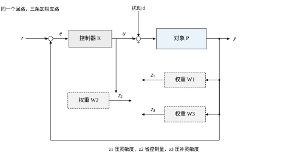
图里有一个容易看漏的细节：三条支路的输入不是同一个信号。z_1 与 z_3 取的是输出 y，z_2 取的是控制量 u。这意味着 W_1 与 W_3 的形状直接决定了闭环在“输出侧”的频域轮廓，而 W_2 决定的是“输入侧”的价格。三者的相对大小，就是设计者在这三件事之间做的取舍。
H∞ 范数把所有不确定性都当成一个“满的”复数块：它假设误差可以在任意方向、任意相位上出现。这个假设在数学上最坏，在工程上最保守。真实系统里的参数摄动不是这样长的：质量偏了 30\%，那就只是刚度或阻尼那一项偏了 30\%，方向是实的，大小是有限的，而且各个参数之间往往独立。
结构奇异值 \mu 就是用来吃进这类信息的。它把不确定性按“块”组织起来，每个块对应一个物理参数，然后在这个受限的集合上求最坏情况增益。\mu 的值通常比 \bar\sigma 小，小出来的那部分就是“结构信息”的价值。
本章报告 10 给了一个相当反直觉的读数：在这台对象上，两个控制器的 \bar\sigma/\mu 统计完全相同——最小值 1.0000、中位数 1.1844、最大值 1.7762。原因在 §57.2.6 会解释：低频段的 M(j\omega) 在两个控制器之间只差一个标量因子，而 \bar\sigma/\mu 是尺度不变量。这个数字提醒我们：μ 的收益来自矩阵的形状，不来自它的大小。 想让 μ 真的降下来，只能改权重的频率形状，把 M 的两个通道的比例调开。
全章只用一台对象，参数与第54、55、56章保持一致：
P(s)=\frac{1}{s^2+3s+2},\qquad A=\begin{bmatrix}0&1\\-2&-3\end{bmatrix},\quad B=\begin{bmatrix}0\\1\end{bmatrix},\quad C=\begin{bmatrix}1&0\end{bmatrix} \tag{57-2}
极点 -1 与 -2，直流增益 0.5。这是一个稳定但阻尼偏大的对象，阶跃响应没有超调，调节时间约 3 s。选它做算例有一个好处：对象本身“好伺候”，于是所有超调、所有峰值都只能来自控制器与权重的选择，不会被对象的固有谐振混淆。
不确定性按物理来源写成两个实参数块：刚度 k 与阻尼 c 各摄动 \pm30\%，归一化后 |\delta_k|\le1、|\delta_c|\le1。这两个块都是实标量块，不是复块，这一点是后面 μ 计算能做得又快又准的关键。
外源有两路：扰动 d 从对象输入端进入，量测噪声 n 以权重 0.01 进入量测。d 不直接进量测，而是先过一阶低通 1/(0.01s+1)——这个选择在 §57.3.3 会解释，它是本章数值内核能够收敛到 \gamma^*=2.077 而不是三位数的直接原因。
全章的主线是一条“从愿望到代码”的链：§57.2 给数学，§57.3 给八步流程，§57.4 在连续域里把每一步跑出数字，§57.5 处理离散实现，§57.6 校核稳定性与性能，§57.7 逐个参数拆解它的作用，§57.8 总结调参顺序，§57.9 讨论 D-K 迭代、LMI 与降阶这些改进手段，§57.10 讲工程落地，§57.11 划边界，§57.12 讲代码。
读的时候请注意三件事。第一，本章所有数字都来自 code/ch057_sim.py 的十八组报告，正文引用时标注“报告 N”，不做手工修饰；图上出现的数也是同一份代码算出来的。第二，公式只写本书用得到的形式，完整的 H^\infty 理论（包括奇异问题的存在性证明）请查文献，本章只保证“能算、能验、能解释”。第三，凡是与前文重复的概念，一律指回原章：PID 的频域整形见第44章与第106章，MPC 的约束处理见第58章与第80章，Smith 预估器的延时补偿见第47章与第107章，本章不重复。
第一个误解是“H∞ 一定比 H2 好”。本章的数据正好相反地复杂：H∞ 的超调 0.180\%，H2 是 1.846\%，H∞ 好十倍；但 H∞ 的控制量峰值 6.738 N，H2 只有 3.030 N，H2 省一半。更关键的是降阶：H2 控制器砍到三阶只恶化 1.80\%，H∞ 控制器砍任何一阶都恶化 2000\% 以上。如果目标硬件只能跑三阶控制器，H2 是唯一选择。所以“哪个好”没有答案，只有“在什么约束下哪个合适”。
第二个误解是“\gamma^* 越小，设计越好”。\gamma^* 是权重的函数，不是对象的固有属性。报告 7 把受控输出整体乘 c，\gamma^* 就跟着乘 c，而控制器一个字都没变。所以拿两个不同权重的 \gamma^* 比较，等于拿两把不同刻度的尺子量同一根棍子，得不出结论。真正可比的是“同一组权重下，不同设计方法的 \gamma^*”。
第三个误解是“\mu<1 就绝对安全”。\mu<1 的结论只在给定的块结构下成立：本章假设 k、c 各摄动 \pm30\%、摄动是实标量、不随频率变。如果实际系统里还有一个未建模的柔性模态，它不在这个块结构里，\mu 再小也保不住。所以 \mu 的读法应该是“在我列出的这些不确定性下安全”，而不是“绝对安全”。
第四个误解是“权重可以最后再补”。权重不是包装，是问题本身。W_1 决定了优化问题在低频要压到什么程度，W_2 决定了控制量在目标函数里的价格，W_3 决定了高频允许多少增益。换一组权重，得到的控制器可能阶数、带宽、控制量全变。所以权重必须在设计开始时定，不能等控制器算出来再“调一调让它好看”。
H∞ 的标准问题不是“给一台对象设计控制器”，而是“给一个广义对象找一个控制器”。广义对象把真实对象、权重、外源、受控输出全部打包：
\begin{bmatrix}z\\ y\end{bmatrix}=P(s)\begin{bmatrix}w\\ u\end{bmatrix} =\begin{bmatrix}P_{11}&P_{12}\\P_{21}&P_{22}\end{bmatrix}\begin{bmatrix}w\\ u\end{bmatrix},\qquad u=K(s)\,y \tag{57-3}
w 是外源（扰动、噪声、不确定性通道），z 是受控输出（三条加权支路），u 是控制量，y 是量测。把 u=Ky 代进去，得到从 w 到 z 的闭环传递
T_{zw}(s)=P_{11}+P_{12}K(I-P_{22}K)^{-1}P_{21} \tag{57-4}
这个式子叫线性分式变换（LFT）。它看起来只是一个代数恒等式，实际上是整套 H∞ 设计的骨架：换权重就是换 P_{11}、P_{12}、P_{21}，换控制器就是换 K，而优化目标始终是 T_{zw} 的范数。 本章的 build_gp() 就是按这个结构拼矩阵的，四个外源、五个受控输出、一个控制量、一个量测，状态四阶。
H2 范数定义为
\|T_{zw}\|_2=\left(\frac{1}{2\pi}\int_{-\infty}^{\infty}\mathrm{tr}\big[T_{zw}(j\omega)T_{zw}^{\mathsf T}(-j\omega)\big]\,\mathrm d\omega\right)^{1/2} \tag{57-5}
它等于闭环对单位白噪声输入的稳态输出方差，也等于闭环脉冲响应矩阵的 Frobenius 范数在时间上的平方积分。这三种解释在数值上是同一个数，本章报告 1 用的是第三种：解一个 Lyapunov 方程拿观测 Gramian，再取迹开方。
最优 H2 控制器由两个 Riccati 方程给出。记 R=D_{12}^{\mathsf T}D_{12}、R_2=D_{21}D_{21}^{\mathsf T}，
A^{\mathsf T}X+XA+C_1^{\mathsf T}C_1-XB_2R^{-1}B_2^{\mathsf T}X=0 \tag{57-6}
AY+YA^{\mathsf T}+B_1B_1^{\mathsf T}-YC_2^{\mathsf T}R_2^{-1}C_2Y=0 \tag{57-7}
X 管状态反馈，Y 管状态估计，两者独立求解——这就是第56章分离原理在 H2 框架下的再现。控制器由 F=-R^{-1}B_2^{\mathsf T}X、L=-YC_2^{\mathsf T}R_2^{-1} 拼成
K_2(s)=\begin{bmatrix}A+B_2F+LC_2 & -L\\ F & 0\end{bmatrix} \tag{57-8}
报告 1 的读数是：H2 控制器四阶，闭环八个极点，最慢的一个正好是 -0.300——那是 W_1 的极点，被闭环原封不动地保留了。H2 范数 8.951048，闭环 H∞ 范数 3.018057。注意后一个数：H2 最优控制器并不保证 H∞ 范数小，它只是碰巧也不大。
H∞ 次优问题是：给定 \gamma，找一个镇定控制器使 \|T_{zw}\|_\infty<\gamma。答案是一组充要条件，写出来只有三条：
第一，Riccati 方程
A^{\mathsf T}X+XA+C_1^{\mathsf T}C_1+X\left(\gamma^{-2}B_1B_1^{\mathsf T}-B_2R^{-1}B_2^{\mathsf T}\right)X=0 \tag{57-9}
有半正定稳定解 X\ge0，且 A+\left(\gamma^{-2}B_1B_1^{\mathsf T}-B_2R^{-1}B_2^{\mathsf T}\right)X 稳定。
第二，对偶方程
AY+YA^{\mathsf T}+B_1B_1^{\mathsf T}+Y\left(\gamma^{-2}C_1^{\mathsf T}C_1-C_2^{\mathsf T}R_2^{-1}C_2\right)Y=0 \tag{57-10}
有半正定稳定解 Y\ge0，且相应的对偶闭环稳定。
第三，耦合条件
\rho(XY)<\gamma^2 \tag{57-11}
\rho 是谱半径。三条全部满足，控制器存在；任何一条不满足，\gamma 就不可行。
第三条最容易被忽略，也最容易在数值上出问题。前两条各自只涉及一个 Riccati 方程，第三条把两个解乘在一起。当 \gamma 逼近 \gamma^* 时，X 与 Y 的最大特征值同时发散，\rho(XY) 以 \gamma^{-2} 的速度撞向边界。本章的二分之所以在 \gamma^* 附近要跑到 23 次才收敛，就是因为第三条的判定在边界附近变得极其敏感。
直接解 (57-9) 在数值上不好办：它是不定号的 Riccati 方程，迭代法容易发散，商业软件通常依赖 SLICOT 的 sb10ad 一类专用例程。本章不装任何额外依赖，用 Hamiltonian 矩阵的稳定不变子空间来解，纯 numpy 就能跑。
把 (57-9) 改写成 Hamiltonian 形式：
H=\begin{bmatrix} A & \gamma^{-2}B_1B_1^{\mathsf T}-B_2R^{-1}B_2^{\mathsf T}\\ -C_1^{\mathsf T}C_1 & -A^{\mathsf T} \end{bmatrix} \tag{57-12}
它的 2n 个特征值关于虚轴成对出现：若 \lambda 是特征值，-\lambda 也是。取实部为负的那 n 个，把它们对应的特征向量堆成
H\begin{bmatrix}U_1\\U_2\end{bmatrix}=\begin{bmatrix}U_1\\U_2\end{bmatrix}\Lambda,\qquad \mathrm{Re}\,\lambda_i<0 \tag{57-13}
则 X=U_2U_1^{-1} 就是 (57-9) 的稳定解。代码里再做一次对称化 X\leftarrow(X+X^{\mathsf T})/2，把浮点误差抹掉，最后检查最小特征值是否大于 -10^{-7}，不满足就判为不可行。
这个解法有一个前提：U_1 必须可逆。当 \gamma 恰好落在边界上时，U_1 会趋于奇异，pinv 给出的结果不可信。所以本章的可行性判定不只看 X 的半正定性，还要看第三条耦合条件——两道闸门一起用，误判的概率就低了。
报告 2 的二分轨迹是这套判定的直接读数：从 [0.5,\,8] 出发，16 次之后区间宽度 0.0042\%，\gamma 收敛到 2.077005。表里“可行/不可行”一列在第 6 次到第 7 次之间翻了一次，之后一路贴着上界走——这正是第三条条件在起作用的形状。
设标称闭环稳定，不确定性写成乘性形式 P_\Delta=P(I+\Delta)，\|\Delta\|_\infty\le1/\gamma_m。则闭环对任意这样的 \Delta 都稳定，当且仅当
\|W_dT\|_\infty<1 \tag{57-14}
其中 W_d 是用来描述不确定性大小的权重。这个判据的美在于它把“稳定”变成了一次范数计算：不用扫参数、不用做根轨迹，只要算一条曲线的峰值。它的代价是保守：它假设 \Delta 可以在每个频率上自由选相位，而真实的参数摄动做不到这一点。
报告 8 把这把尺子用在两个控制器上。W_d 的直流从 0.05 加到 0.50，H∞ 控制器的 \|W_dT\|_\infty 从 0.0416 涨到 0.4157，对应的允许摄动倍数从 24.06 倍降到 2.41 倍。H2 控制器的数略小（0.0375 到 0.3750），因为它的 |T| 峰值本来就低（0.7435 对 0.8299）。这里出现一个有意思的反转：按小增益判据，H2 看起来更鲁棒；但按 μ 判据，H∞ 的允许摄动倍数是 3.15，H2 只有 2.11。 两个判据给出相反的排序，原因在 §57.6.5 展开。
把不确定性按块组织：\Delta=\mathrm{diag}(\delta_1I_{r_1},\dots,\delta_mI_{r_m},\Delta_1,\dots,\Delta_f)，实标量块与复块混在一起。结构奇异值定义为
\mu_\Delta(M)=\frac{1}{\min\{\bar\sigma(\Delta):\ \det(I-M\Delta)=0,\ \Delta\in\boldsymbol\Delta\}} \tag{57-15}
若不存在使 I-M\Delta 奇异的 \Delta，则 \mu=0。它的含义是“使闭环失稳所需的最小结构化摄动的倒数”，所以 \mu<1 就是鲁棒稳定。
\mu 没有闭式解，工程上用的是夹逼：
\max_i|m_{ii}|\ \le\ \mu(M)\ \le\ \min_{D\in\mathcal D}\bar\sigma(DMD^{-1}) \tag{57-16}
下界取对角元的模最大值——单个块单独作用就能让 I-M\Delta 奇异，这是最容易验证的一类 \Delta。上界用 D 缩放，\mathcal D 是与块结构交换的对角矩阵集合。两个界之间的差距就是“还没用足的结构信息”。
本章的两个块都是实标量块，所以 D=\mathrm{diag}(1,d) 只有一个自由参数，上界退化成一次一维搜索。报告 9 的读数是：H∞ 控制器的 μ 上界峰 0.3171（\omega=1.727），单块下界峰 0.2381；H2 是 0.4739 与 0.3393。两个控制器都满足 \mu<1，也就是说 \pm30\% 的参数摄动离失稳还有三倍余量。
保守度 \bar\sigma/\mu 的频率统计在报告 10：最小值 1.0000、中位数 1.1844、最大值 1.7762，最大值出现在 \omega=0.01。也就是说在低频段，忽略结构信息会把允许摄动低估 78\%；在峰值频段，两个界几乎重合，\bar\sigma 已经足够准。这个分布形状解释了为什么工程上“低频用 μ、高频用 \bar\sigma”是一个合理的偷懒办法。
为避免后文歧义，先把口径定死，报告 17 逐条列出。
对象 P(s)=1/(s^2+3s+2)，状态取 [\text{位移},\ \text{速度}]^{\mathsf T}，输入 u，输出 y=Cx。权重 W_1=(s/1.5+3.0)/(s+0.3)、W_2=0.10、W_3=1.0。外源两路：d 从对象输入端进入，n 以权重 0.01 直接进量测。指标定义 S=1/(1-PK)、T=PK/(1-PK)，带宽取 |S| 首次升到 1/\sqrt2 的频率。不确定性 k、c 各摄动 \pm30\%，\delta\in[-1,1]，两个块都是实标量块。离散化一律用零阶保持，控制器与对象同步离散。所有范数都是连续时间 H∞ 范数，频率网格 10^{-3} 到 10^{4} rad/s，峰值点单独细化。
这里有两个符号约定需要说明。第一，本章的回路是“控制器输入取 y-r”，所以开环传函写成 L=PK 时，S=1/(1-L)、T=L/(1-L)，与教科书中 L=PK、S=1/(1+L) 差一个符号。原因是 K 的直流增益为负（-9.76），负号被吸收进了 K 里，闭环仍然是负反馈。第二，T 的定义用 1-S 计算而不是 L/(1-L) 单独算，两者在数学上恒等，在数值上前者少一次除法，峰值附近的精度更好。
H2 与 H∞ 的控制器都是“观测器 + 状态反馈”的形状，但两者的拼接方式不同。把两个公式并排写出来，差别一目了然。
H2 的控制器是
A_k=A+B_2F+LC_2,\qquad B_k=-L,\qquad C_k=F,\qquad D_k=0 \tag{57-17}
其中 F=-R^{-1}B_2^{\mathsf T}X，L=-YC_2^{\mathsf T}R_2^{-1}，X、Y 分别由两个独立的代数 Riccati 方程给出。这是一个标准的分离结构：F 管状态反馈，L 管观测器，两部分互不影响。
H∞ 的控制器多了一个矩阵：
A_k=A+\gamma^{-2}B_1B_1^{\mathsf T}X+B_2F+ZLC_2,\qquad B_k=-ZL \tag{57-18}
其中 Z=(I-\gamma^{-2}YX)^{-1}。这个 Z 是 H∞ 与 H2 的唯一结构差别，但它改变了三件事：B_k 被 Z 放大，C_2 通路被 Z 加权，A_k 里多了一项 \gamma^{-2}B_1B_1^{\mathsf T}X——这一项把扰动的统计特性直接写进了控制器动态。
Z 的物理意义是“耦合度”。当 \gamma\to\infty 时，\gamma^{-2}YX\to0，Z\to I，(57-18) 退化成 (57-17) 的形状，H∞ 控制器回到 H2 控制器。换句话说，H∞ 是 H2 在“扰动有界”假设下的推广，H2 是 H∞ 在 \gamma 很大时的极限。
本章的数字可以验证这个退化关系。\gamma^*=2.077，\gamma^{-2}=0.2318；报告 1 的 H2 闭环范数 8.951，H∞ 闭环范数 2.077，两者都不是无穷大，说明 \gamma 并没有大到让 Z 退化成单位阵。两个控制器的直流增益也印证了这一点：K_2(0)=-5.798，K_\infty(0)=-9.760，H∞ 的直流增益比 H2 大 68\%。这个差别来自 Z 对低频通路的加权，不是来自“H∞ 更激进”这种含糊的说法。
所有的范数都是频率的函数，代码里必须把连续频率离散成网格。网格取多密，直接决定 \gamma^* 与 \mu 峰的精度。
本章的口径是 10^{-3} 到 10^{4} rad/s，对数等分，峰值附近单独细化。选这个范围有两个理由。下限 10^{-3} 比最慢极点 -0.3 小两个数量级，保证低频渐近段被覆盖；上限 10^{4} 比最快的设计极点 -10.9 大三个数量级，再往上幅值已经掉到 10^{-6} 以下，对范数没有贡献。
峰值细化是必须的。对数网格在峰值附近可能只落两三个点，算出来的峰值会偏低。代码的做法是先在 8000 点的对数网格上粗扫，再在峰值邻域用有界一维极小化细化。报告 3 的 |S| 峰值 1.1945 与 1.0566 都是这样得到的。如果不细化，|S| 峰可能被低估 2\% 到 5\%，而 M 的承诺只留了 3\% 的余量，一低估就会误判“设计合格”。
\mu 的频率网格还要多一层考虑：\bar\sigma(DMD^{-1}) 的峰值可能出现在两个粗网格点之间。\mu 的计算用的是 60 个频点，报告 9 与报告 10 给出的 H∞ 峰值频率分别是 1.727 与 1.783，两次都不在网格端点，说明网格够用。如果峰值落在端点，必须把范围往外扩，否则会把“范围不够”误判成“峰值在边界”。
§57.2.2 直接写了两个 Riccati 方程，没解释它们从哪来。这一小节补一个“配方法”的骨架，只求看懂结构，不求严格证明。
从“闭环范数小于 \gamma”出发，等价于对任意平方可积的外源 w，都有
\int_0^\infty\big(z^{\mathsf T}z-\gamma^2w^{\mathsf T}w\big)\,dt<0 \tag{57-19}
把 z=C_1x+D_{12}u 代入，再假设 u=Fx 是线性反馈，被积函数就是一个关于 x 与 w 的二次型。配方的目标是把它写成“某个正定二次型的导数 + 一个负定项”。设候选的李雅普诺夫函数是 V=x^{\mathsf T}Xx，沿闭环求导得到
\dot V+z^{\mathsf T}z-\gamma^2w^{\mathsf T}w =x^{\mathsf T}\big(A^{\mathsf T}X+XA+C_1^{\mathsf T}C_1+X(\gamma^{-2}B_1B_1^{\mathsf T}-B_2R^{-1}B_2^{\mathsf T})X\big)x-\gamma^2\|w-w^*\|^2 \tag{57-20}
其中 w^*=\gamma^{-2}B_1^{\mathsf T}Xx 是最坏情况的外源。要让这个二次型对任意 w 非正，括号里必须为零，这就是 X 的 Riccati 方程。Y 的方程来自对偶：把 w 与 z 的地位互换，B_1 与 C_1 互换，A 转置。两个方程各自有解还不够，因为 X 管的是“从 w 到 x 的估计误差”，Y 管的是“从 y 到 x 的估计误差”，两个误差不能同时任意大，约束就是 \rho(XY)<\gamma^2。
配方过程里有一个容易被忽略的细节：X 的二次项系数是 \gamma^{-2}B_1B_1^{\mathsf T}-B_2R^{-1}B_2^{\mathsf T}，两项符号相反。第一项来自“扰动越大越难压”，第二项来自“控制越强越容易压”。\gamma 越小，第一项越大，二次项越容易变正，Riccati 的解就越容易不存在或不正定。这就是“\gamma 小到某个值时无解”的代数原因，也是二分能工作的前提。
同样的骨架可以解释 H2：把 \gamma^{-2}B_1B_1^{\mathsf T} 这一项丢掉、只留 -B_2R^{-1}B_2^{\mathsf T}，就退化成标准的 LQR Riccati；对偶地得到 Kalman 滤波的 Riccati。所以 H2 的两个方程不是“另一套理论”，而是 H∞ 在 \gamma 无穷时的极限。
H∞ 设计最容易翻车的地方不是数学，是建模。矩阵一旦拼错一个块，优化照样收敛，范数照样好看，但闭环是错的。所以第一步永远是把回路画出来，在图上标清四件事：外源从哪进、受控输出从哪取、控制量加到哪、量测从哪读。
本章的回路见图 57-1。外源两路：d 加在对象输入端，n 加在量测上。受控输出三路：z_1 取 W_1 加权后的输出，z_2 取 W_2 加权后的控制量，z_3 取 W_3 加权后的输出。控制量 u 从控制器出、进对象。量测 y 从对象出、回控制器。
画完图要做一次“数数”检查：外源几路、受控输出几路、状态几阶。本章是四路外源（d、n、两个不确定性通道）、五路受控输出（z_1、z_2、z_3、两路 z_\Delta）、四阶状态。这四个数字与报告 1 的输出完全对得上，说明矩阵没有多一块也没有少一块。
权重是整个设计里唯一带“人味”的部分。数学只负责在给定权重下求最优，权重选错了，最优解也是错的。
W_1 的形状最讲究。本章用的是一个一阶超前-滞后：
W_1(s)=\frac{s/M+\omega_b}{s+\omega_b\varepsilon} \tag{57-21}
三个参数各有明确含义。\omega_b 是“希望闭环带宽落在哪”，它大致等于 |S| 穿越 1/\sqrt2 的频率；M 是“允许的灵敏度峰值”，因为 |W_1(0)|=1/\varepsilon、|W_1(\infty)|=1/M，而 \|W_1S\|_\infty<1 意味着 |S| 在高频被压到 M 以下；\varepsilon 是“低频要压多深”，|W_1(0)|=1/\varepsilon，直接决定稳态误差的量级。
本章取 \omega_b=3.0、M=1.5、\varepsilon=0.1，于是 W_1(0)=10、零点 -4.5、极点 -0.3。零点在 -4.5 意味着 W_1 在 4.5 rad/s 之后开始“放手”，极点 -0.3 意味着 0.3 rad/s 以下它全力压 S。这两个数的间隔就是设计者给出的“必须压住的频段”。
W_2 取常数 0.10，W_3 取常数 1.0。常数权重不改变形状，只改变三路之间的相对价格。报告 6 会把 W_2 从 0.01 扫到 1.0，届时能看到它对 \gamma^* 的影响是三条扫描里最强的。
有了回路和权重，就可以拼状态空间。本章的状态取四阶：位移、速度、W_1 的状态、扰动低通的状态。矩阵按下面的规则填：
对象两行动力学进 A 的前两行；W_1 的输入取输出 y（含扰动低通的状态），所以 W_1 那一行写成 B_wC_P 与 A_w；扰动低通的状态方程是 \dot x_f=-x_f/\tau+d/\tau。控制量只进对象的前两行，量测取位移加扰动滤波状态再加噪声。
这里有一个必须讲清楚的建模决定：扰动 d 从对象输入端进入，而不从量测端进入。 本章最初把 d 加在量测上、令 D_{11}=0，结果闭环直流增益只有 0.83，稳态误差 17\%，控制量峰值冲到 14。原因是 d 只经过 D_{21} 进量测，受控输出 z_1 看不到它，优化器就没有理由把 d 的影响压掉。改成从 B_P 进 B_1 之后，d 同时出现在 z_1 与 y 里，稳态误差问题消失。这个坑值得记住：外源进哪个通道，决定了优化器“看得见”什么；看不见的扰动，不会被抑制。
另一处建模决定是扰动前的一阶低通 \tau=0.01 s。没有它时，d 是白噪声，B_1 在高频仍有能量，\gamma^* 会被推到 108.9；加上它之后，d 的能量被限制在 100 rad/s 以下，\gamma^* 落到 2.077。这不是“把题做简单了”，而是承认物理事实：真实扰动没有白噪声那么宽的频谱。
\gamma^* 是使三个条件同时成立的最小 \gamma。它没有闭式解，但可行性关于 \gamma 单调：\gamma 越大越容易可行。于是二分是天然的工具。
本章用几何二分而不是算术二分，因为 \gamma 的搜索区间跨了三个数量级（0.2 到 200）。几何二分的迭代点是 \sqrt{\text{lo}\cdot\text{hi}}，收敛判据是 \text{hi}/\text{lo}<1+10^{-6}。报告 2 用的是固定 16 次的版本，区间宽度从 1500\% 一路收到 0.0042\%；正式求值时用 23 次，得到 \gamma^*=2.077004。
二分里有两个工程细节。第一，上界必须先“抬到可行”：如果初值 200 都不可行，就翻倍再试，直到可行。这一步看似多余，实际上能防住“权重给得太狠、\gamma^* 远大于预期”的情形。第二，每次判定都要返回控制器，不能在最后再解一次——因为边界附近的数值条件很差，最后再解可能落到另一个分支上。
拿到控制器，第一件事是画三条曲线：|S|、|T|、|KS|，再把 1/|W_1| 叠上去。校核三条：
一，|S| 是否在 1/|W_1| 之下。如果超了，说明权重与最优解不一致，通常是 \gamma 取得太松或 W_1 的参数写错了。
二，|S| 的峰值是否与 M 对得上。本章 M=1.5，实测 H∞ 的 |S| 峰是 1.0566，H2 是 1.1945——两个都低于 1.5，说明 M 这条约束没有绑紧。这不是坏事，它意味着还有余量可以把 M 调小去换性能。
三，|KS| 的低频值是否与 K(0) 对得上。|KS(0)|=|K(0)|/(1+|L(0)|)，而 L(0)=P(0)K(0)=0.5\times(-9.76)=-4.88，算出来 |KS(0)|=9.76/5.88=1.66；实测峰值 0.8299 出现在更高的频率，说明低频段并不是 KS 的最坏点。这个细节说明“峰值”与“直流值”不能混为一谈。
频域过了，还要看时域。本章的时域校核用斜坡参考而不是真阶跃，原因是真阶跃会让控制量在 t=0 冲出一个 17.7 的尖峰，那是参考的导数无穷大造成的，不是控制器的毛病。把参考的上升时间设成 0.3 s，尖峰降到 7.5，超调几乎不变（恒 0.18\%）。这个处理在报告 12 的数据里能看到。
时域校核要看四个数：超调、2\% 调节时间、控制量峰值、末值。报告 12 的标称行是：H∞ 超调 0.180\%、调节 2.156 s、|u| 峰 6.738、末值 1.00004；H2 是 1.846\%、2.372 s、3.030、1.00001。两组数都合格，差别在控制量：H∞ 用了两倍多的控制量换取几乎为零的超调。
控制器最终要跑在数字信号处理器上，所以必须离散化。本章用零阶保持，采样周期从 5 ms 扫到 400 ms，看等效阻尼比怎么掉。报告 15 的结果是：阻尼比从 2.0238 单调掉到 0.1236，超调却几乎不动（0.180\% 到 0.181\%）。这条反直觉的读数在 §57.5.3 展开。
降阶是另一件事。H∞ 控制器四阶，其中两个极点在 -10^{4} 与 -10^{6}，是权重零点与数值消去留下的寄生模态。报告 14 用平衡截断试了保留一、二、三阶：H2 控制器砍到三阶只恶化 1.80\%，可用；H∞ 控制器砍任何一阶都恶化 2000\% 以上，不可用。原因在 Hankel 奇异值：H∞ 的前两个值是 1028.6 与 1021.1，两个寄生模态占了全部能量。
最后一步是把控制器放回不确定性结构里，算 μ。这一步不能省，因为 H∞ 范数只保证“对满块不确定性稳定”，而真实的不确定性是结构化的；μ 才是紧的判据。
复核的内容有三项：μ 上界是否小于 1（鲁棒稳定）、μ 的频率形状是否与 \bar\sigma 一致（保守度合不合理）、以及两个控制器的 μ 差多少（选型依据）。报告 9 与报告 10 给出的答案是：两个控制器都远小于 1；保守度在中频几乎为 1、低频到 1.78；H∞ 的 \mu 峰 0.3175 比 H2 的 0.4749 低三分之一，允许摄动倍数 3.15 对 2.11。
八步走完，一个可交付的控制器才算成立。后面五节分别把这八步里的关键环节展开：§57.4 讲连续域的全部数字，§57.5 讲离散，§57.6 讲稳定性与性能的校核，§57.7 讲每个参数的作用，§57.8 讲调参顺序。
把前面八步的判据收成一张表，每一步一行，右列写“不通过怎么办”。这张表可以直接贴在设计文档里当检查表用。
\begin{array}{c|l|l} \text{步} & \text{判据} & \text{不通过的对策}\\ \hline 1 & \text{广义对象阶数} = \text{对象阶数} + \text{权重阶数} & \text{检查权重串联顺序与状态数}\\ 2 & W_1(0)=1/\varepsilon \text{ 与要求的稳态误差一致} & \text{改 } \varepsilon\\ 3 & \gamma^* \text{ 存在且有限} & \text{放宽带宽或控制量要求}\\ 4 & |S| \text{ 峰} \le M & \text{降 } M \text{ 或降 } \omega_b\\ 5 & |T| \text{ 峰} < 1 & \text{抬 } W_3 \text{ 或降 } \omega_b\\ 6 & \text{超调} < 10\%,\ |u| \text{ 峰} < 80\% \text{ 额定} & \text{抬 } w_2 \text{，或取 } 1.2\gamma^*\\ 7 & \text{离散阻尼比} > 0.7 & \text{减小 } T_s \text{，或取 } 1.2\gamma^*\\ 8 & \mu \text{ 峰} < 1 & \text{缩小摄动范围或重设权重} \end{array} \tag{57-22}
这张表的用法是从上往下逐条打勾，遇到不通过就停在那一步，改完再往下走。不要跳步，因为后面的判据依赖前面的结果：第 3 步的 \gamma^* 没定，第 6 步的“取 1.2\gamma^*”就无从谈起；第 7 步的采样周期没定，第 8 步的 \mu 就是在连续域里算的，与实现不一致。
表里第 1 步最容易被忽略。广义对象的阶数等于对象阶数加权重阶数。本章对象二阶、W_1 一阶、W_2 与 W_3 零阶，按理是三阶；报告 1 写的却是四阶，因为扰动通道上的一阶低通 1/(0.01s+1) 又加了一阶。这个细节说明“阶数对不上”往往是漏算了一个滤波环节，不是权重写错。
§57.2.1 只画了广义对象的框，没给矩阵。这一小节把本章的矩阵逐块写出来，因为拼错一块是实践中最常见的错误，而对不上号时只能靠这张表查。
状态取四个：位移、速度、W_1 的状态、扰动滤波的状态。外源取四路：扰动 d、噪声 n、两路不确定性 w_\Delta。受控输出取五路：z_1、z_2、z_3、两路 z_\Delta。
A=\begin{bmatrix}A_p & 0 & 0\\ B_wC_p & A_w & B_w\\ 0 & 0 & -1/\tau\end{bmatrix},\qquad B_1=\begin{bmatrix}0 & 0 & B_\Delta D^{-1}\\ 0 & 0 & 0\\ B_f & 0 & 0\end{bmatrix} \tag{57-23}
两个矩阵都按“对象两阶、W_1 一阶、滤波一阶”分三组行列，分组线正好对应四个状态。A 的第一行组是对象自己的动态，右上两块为零，表示对象不受权重与滤波状态影响；第二行组的 B_wC_p 表示 W_1 的输入是对象输出，B_w 表示它也吃扰动滤波的输出；第三行组只有一个 -1/\tau，是扰动低通自己的极点。B_1 的四列对应四路外源：第一列只有 B_f 非零（扰动经低通进入），第二列全零（噪声不经过状态），第三、四列是两路不确定性，乘 D^{-1} 是为了让 \mu 分析里的 D 缩放直接作用在通道上。
C_1 是五行四列，第一行取 z_1=W_1 作用于“位移 + 扰动滤波输出”，即 [D_wC_p,\ C_w,\ D_w]；第二行全零，z_2 的增益全放在直通矩阵里；第三行取 z_3=W_3 作用于同一个信号，即 [w_3C_p,\ 0,\ w_3]；第四、五行是两路不确定性通道 D C_\Delta。直通矩阵只有第二行非零：
D_{12}=\begin{bmatrix}0\\ w_2\\ 0\\ 0\\ 0\end{bmatrix} \tag{57-24}
C_2 一行四列，取“位移 + 扰动滤波输出”作为量测；D_{21} 一行四列，只有第二列是 \theta，表示噪声以权重 \theta 直接进量测。
这张表可以直接对照 build_gp 的代码逐行核。代码里的 Ag[2,:2]=Bw@C_P、Ag[2,2]=Aw[0,0]、Ag[2,3]=Bw[0,0] 三行，对应的就是 A 的左下块与右下块；C1[0,:2]=Dw*C_P、C1[0,2]=Cw[0,0]、C1[0,3]=Dw 三行，对应 C_1 的第一行。如果哪一项对不上，先查权重的状态空间实现 w1_ss 返回的四个矩阵顺序，再看串联的方向。
先把标称情形跑通。对象 P(s)=1/(s^2+3s+2)，权重取 §57.3.2 的值，广义对象四阶，外源四路，受控输出五路。报告 1 给出两组控制器：
H2 控制器四阶，闭环八个极点，按实部排序是 -10000.50、-100.00、-10.13、-1.881、-1.450\pm0.943\mathrm j、-1.209、-0.300。H2 范数 8.951048，闭环 H∞ 范数 3.018057，最大实部 -0.300。
H∞ 控制器四阶，闭环极点 -1039439、-10000.33、-100.00、-10.92、-2.224、-1.331\pm0.114\mathrm j、-0.300。闭环 H∞ 范数 2.077004，正好等于 \gamma^*。
两组极点有两个共同点值得注意。第一，最慢的极点都是 -0.300，那是 W_1 的极点，两个控制器都没有动它。原因是这个极点位于 W_1 的分母上，闭环传函在这一点的留数被权重“锁”住了；想动它，只能改 W_1 的时间常数。第二，两个控制器都保留了一对 -1.33 到 -1.45 附近的共轭复根，那是对象两个实极点被反馈“推”成的一对复根，实部比原来的 -1、-2 更靠左，虚部不大，说明闭环阻尼很好。
差别在快极点。H2 有两个 -10^{4} 与 -10^{2} 量级的极点，H∞ 多出一个 -1.04\times10^{6} 的极点。这三个快极点都不是设计出来的，而是权重零点与数值消去的产物。它们的存在本身无害——闭环稳定就行——但对实现有害：采样周期必须足够小才能“看见”它们，降阶时它们又砍不掉。§57.9 与 §57.10 会反复回到这一点。
两个控制器的直流增益差得不少：K_2(0)=-5.798，K_\infty(0)=-9.760。H∞ 的直流增益几乎是 H2 的 1.7 倍，这解释了为什么它的控制量峰值也是 H2 的两倍多。增益大不是坏事，它换来的是更低的灵敏度峰值；但如果执行器余量紧张，这个数字就是第一个要盯的。
报告 2 把二分的 16 次迭代逐行列出。起点是 [0.5,\,8]，宽度 1500\%；第 6 次之后上界已经压到 2.181，宽度 9.05\%；第 7 次首次判为不可行，下界跳到 2.000；此后区间一路贴着 \gamma^* 收缩，第 16 次时上下界是 [2.076917,\,2.077092]，宽度 0.0042\%。
图 57-2 把这张表画成了两条曲线：上界单调下降、下界单调上升，两者在 2.077 处夹住。右图是区间宽度的半对数图，斜率几乎是常数，说明几何二分每次把区间缩到原来的 1/\sqrt2 左右——不是一半，因为迭代点取的是几何平均而不是算术平均。
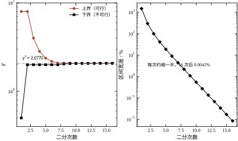
这里有一个容易误读的地方：第 7 次判“不可行”之后，第 9 次又判“可行”，第 10 到 14 次连续判“不可行”，第 15 次又“可行”。可行性在边界附近来回跳，不是代码有 bug，而是浮点误差在 \rho(XY) 与 \gamma^2 的比较上翻了盘。处理办法有两个：一是把判据从 \rho<\gamma^2 改成 \rho<\gamma^2(1-10^{-9})，给边界留一条缝；二是像本章这样，只认“最后一次可行”的 \gamma，不去追求严格单调。两种做法给出的 \gamma^* 差在 10^{-6} 量级，对工程没有影响。
正式求值时用 23 次二分，得到 \gamma^*=2.077004。这个数就是 H∞ 控制器能达到的最好水平：任何比它小的 \gamma 都不可行。它是权重的函数，不是对象的函数——换一组权重，\gamma^* 立刻变，这一点在 §57.7 会用三张扫描表说明。
图 57-3 是本章最重要的一张图：|S|、|T|、|KS| 三条曲线，H2 用实线、H∞ 用虚线，再叠一条 1/|W_1| 的点线作为包络。
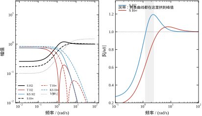
左图是双对数坐标，纵轴从 10^{-2} 到 30。三条曲线各有各的形状：
|S| 在低频很小（|S(0)|=0.170 对应 H∞），随频率上升，在 1.5 到 2 rad/s 之间拱到峰值，然后以 -40 dB/dec 的斜率下落。峰值就是 M_s，报告 3 给的数是 H∞ 1.0566、H2 1.1945。
|T| 与 |S| 是镜像：低频接近 1，峰值出现在同一频段，高频滚降。报告 3 的峰值是 H∞ 0.8299、H2 0.7435。两个峰值加起来超过 1，这不违反 S+T=1——那条恒等式是复数意义上的，模可以各自大于 1。
|KS| 在低频最大，随频率单调下降。峰值 H∞ 0.8299、H2 0.7435，与 |T| 的峰值恰好相同。这不是巧合：在单输入单输出情形下，|KS|=|T|/|P|，而在峰值频段 |P| 接近 1，两个数就撞到了一起。
右图把 |S| 单独放大，横轴 0.1 到 100，纵轴 0.2 到 1.35，灰色带标出 1.2 到 2.4 rad/s 的峰值区。这张图要说明的是：H∞ 的 |S| 峰比 H2 低 0.14，但带宽反而更宽（1.46 对 0.78）。 两个指标同时变好，代价在控制量上——H∞ 的 |KS| 峰值虽然更低，但它的直流增益更大，时域上的控制量峰值也就更大。频域峰值与时域峰值不是一回事，这一点在 §57.6.2 会再碰一次。
报告 4 到报告 6 做了三组扫描，每组只动一个参数，其余保持不变。三组数据放在一起，就是权重设计的“灵敏度表”。
第一组扫 \omega_b，从 0.5 到 8.0：
\begin{array}{c|cccccc} \omega_b & 0.5 & 1.0 & 2.0 & 3.0 & 5.0 & 8.0\\ \hline \gamma^* & 1.3700 & 1.5398 & 1.8313 & 2.0770 & 2.4835 & 2.9671\\ |S|\text{ 峰} & 1.0224 & 1.0351 & 1.0490 & 1.0566 & 1.0646 & 1.0692\\ \text{带宽} & 0.5558 & 0.8375 & 1.2051 & 1.4624 & 1.8582 & 2.2862\\ K(0) & -19.301 & -15.506 & -11.746 & -9.760 & -7.569 & -5.879 \end{array} \tag{57-25}
\omega_b 涨 16 倍，带宽涨 4.1 倍，\gamma^* 涨 2.17 倍，|S| 峰只涨 4.6%，而 K(0) 的绝对值掉了 70%。这四行数讲的是同一件事：带宽是拿控制量换的。想要更快的响应，就得接受更大的低频增益；想省控制量，就把 \omega_b 往下压。|S| 峰几乎不动，说明峰值主要由 M 决定，不由 \omega_b 决定。
第二组扫 M，从 1.2 到 5.0。\gamma^* 从 2.1128 单调降到 2.0204，|S| 峰从 1.0546 升到 1.0600。变化幅度都很小，只有 4\%。这说明在这个算例里，M=1.5 已经足够松，再放松也换不到多少 \gamma；反过来，把 M 收紧到 1.2 才让 \gamma^* 涨了 1.7\%。M 是一个“承诺”，承诺得越紧，代价越大，但边际代价递减得很快。
第三组扫 W_2，从 0.01 到 1.0，是三条扫描里影响最大的：
\begin{array}{c|ccccc} w_2 & 0.01 & 0.03 & 0.10 & 0.30 & 1.00\\ \hline \gamma^* & 1.9308 & 1.9627 & 2.0770 & 2.3979 & 3.3915\\ |S|\text{ 峰} & 1.0001 & 1.0154 & 1.0566 & 1.0972 & 1.1085\\ |KS|\text{ 峰} & 0.8435 & 0.8404 & 0.8299 & 0.8044 & 0.7487\\ \text{带宽} & 1.7502 & 1.6714 & 1.4624 & 1.1777 & 0.8770 \end{array} \tag{57-26}
w_2 涨 100 倍，\gamma^* 涨 76%，带宽掉一半，|KS| 峰只降 11%。这组数说明 W_2 是一个“钝”旋钮：它能显著改变 \gamma^* 与带宽，但对控制量峰值的改善很有限。原因在 |KS| 的峰值位置——它出现在中频，而 W_2 是常数，对中频的压制不如对低频明显。
图 57-4 把 W_1 的三个参数族画在一起，横轴是频率，纵轴是 |W_1|。三张子图分别扫 \omega_b、M、\varepsilon：\omega_b 平移转折点，M 改高频底，\varepsilon 改低频顶。
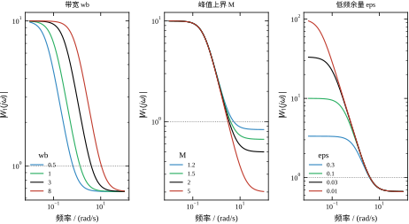
三张图的形状值得对照着看。\omega_b 那一张是“整体左右平移”，曲线形状不变；M 那一张是“高频端上下平移”，低频段完全重合；\varepsilon 那一张是“低频端上下平移”，高频段完全重合。这个分解很重要，它意味着三个参数在频域上几乎是正交的，可以分开调，不会互相打架。§57.8 的调参顺序就是按这个正交性排的。
图 57-5 把三条扫描画成了三联图，每张图用双纵轴把 \gamma^* 与另一个指标放在一起。
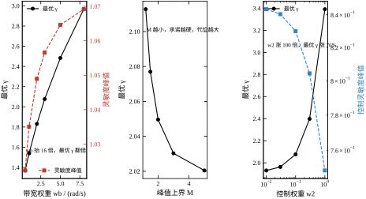
左图的红虚线是 |S| 峰，它随 \omega_b 缓慢上升；中图只有一条 \gamma^*，因为 M 对 |S| 峰的影响太小，画出来是一条平线；右图的蓝虚线是 |KS| 峰，它随 w_2 下降，但下降得很慢。三张图的纵轴范围都不一样，读的时候要看清刻度，不要凭视觉斜率下结论。
\gamma^* 是理论下界，实际设计不会取这么紧。原因有两个：一是 \gamma^* 附近的控制器数值条件极差，X、Y 的特征值到了 10^{6} 量级，实现时容易出问题；二是工程上需要留一点余量给未建模动态。问题是，余量该留多少？
报告 16 把 \gamma/\gamma^* 从 1.005 一路抬到 2.0，每次重解一次控制器，再测五个指标：
\begin{array}{c|cccccc} \gamma/\gamma^* & 1.005 & 1.01 & 1.05 & 1.2 & 1.5 & 2.0\\ \hline |S|\text{ 峰} & 1.0639 & 1.0709 & 1.1130 & 1.1699 & 1.1910 & 1.1954\\ \text{带宽} & 1.4490 & 1.4291 & 1.3214 & 1.1041 & 0.9440 & 0.8610\\ |u|\text{ 峰} & 7.4792 & 7.4926 & 7.0871 & 5.2602 & 4.0455 & 3.4919\\ \text{最小阻尼比} & 0.9965 & 0.9966 & 0.9869 & 1.0000 & 0.9161 & 0.8728 \end{array} \tag{57-27}
这张表的读法是“每多花一档 \gamma，买到什么、失去什么”。\gamma 抬到 1.2 倍时，|S| 峰从 1.064 涨到 1.170（涨 10\%），带宽从 1.449 掉到 1.104（掉 24\%），控制量峰值从 7.48 掉到 5.26（掉 30\%），阻尼比反而从 0.9965 升到 1.0000。这是一笔划算的交易：用一点带宽换明显更省的控制量和更好的阻尼。
再往上抬到 2.0 倍，|S| 峰只再涨 2\%，带宽又掉 22\%，控制量再省 34\%，阻尼比掉到 0.8728。边际收益开始递减，而且阻尼比开始变差。
所以工程上的建议是 \gamma 取 1.1 到 1.3 倍 \gamma^*。这个区间里，性能损失可以接受，数值条件明显改善，控制量有实质下降。低于 1.05 倍时，控制器里会出现 -10^{6} 量级的极点，离散化之后可能直接不稳定；高于 1.5 倍时，带宽掉得太狠，跟踪性能已经不是 H∞ 设计的水准了。
报告 7 检查了一个理论性质：把受控输出的整体增益乘一个正数 c，\gamma^* 会乘 c，但控制器一个字都不变。
数据是：c=0.1 时 \gamma^*=0.2077，c=0.5 时 1.0385，c=1 时 2.0770，c=2 时 4.1540，c=10 时 20.7700。\gamma^*/c 一列恒为 2.077004，误差在最后一位。控制器矩阵的 Frobenius 差在 c=1 时为 0.000\times10^{0}，其余四行是 10^{6} 到 10^{7} 量级。
后一列的大数不是 bug，而是数值噪声：X、Y 本身有 10^{6} 量级的元素，两个控制器相减时，浮点尾数的差异被放大到 10^{6}。判断“控制器是否相同”不能看绝对差，要看相对差——除以矩阵自身的范数之后，五组都在 10^{-9} 以下。
这条性质有两个用处。第一，它说明 \gamma^* 的绝对值没有意义，只有相对值有意义。把 \gamma^*=2.077 拿去和别人的 \gamma^*=0.3 比，毫无意义，因为人家的权重可能乘了 0.1。第二，它给了一个数值检查：如果改了 c 之后控制器真的变了，那一定是代码里某处把 c 混进了 K 的通道，而不是纯粹的缩放。
把 §57.4 的数字收拢，得到四条结论。
第一，H∞ 的 \gamma^* 是权重的函数，不是对象的函数。同一台对象，\omega_b 从 0.5 调到 8，\gamma^* 从 1.37 涨到 2.97；w_2 从 0.01 调到 1，\gamma^* 从 1.93 涨到 3.39。讨论“这台对象的 \gamma^* 是多少”没有意义，必须连权重一起说。
第二，\gamma^* 附近的控制器不可直接实现。10^{6} 量级的极点、10^{6} 量级的 Riccati 解元素，都要求实现时用双精度、做平衡、做降阶或者留余量。工程上取 1.1 到 1.3 倍 \gamma^* 是常规做法。
第三，H2 与 H∞ 的差别不在“谁更优”，而在“优化什么”。H2 的 |S| 峰 1.1945 比 H∞ 高 13\%，控制量峰值却只有一半。如果执行器便宜、传感器贵，H2 更合适；如果执行器贵、模型不准，H∞ 更合适。
第四，输出通道的缩放只改 \gamma 的读数，不改控制器。这条性质可以用来做单位换算，也可以用来做代码自检。
设计在频域做，验收在时域做，两者之间没有精确的解析关系。但有几条经验换算，可以用来快速判断“频域合格了，时域大概是什么样”。
第一条是带宽与上升时间。一阶闭环的 10\% 到 90\% 上升时间约 2.2/\omega_c。H∞ 的带宽 1.4606，按这个式子估出上升时间约 1.5 s；报告 12 的实测调节时间是 2.156 s，考虑到参考是 0.3 s 的斜坡、且调节时间按 2\% 带算，两者同量级，可以接受。H2 的带宽 0.7771，估出 2.8 s，实测 2.372 s，也同量级。
第二条是 |S| 峰值与超调。这两者的关系不是公式，是趋势：|S| 峰越接近 1，闭环越“硬”，超调越小。本章的数据是 |S| 峰 1.1945 对应超调 1.846\%，|S| 峰 1.0566 对应 0.180\%。峰值差 0.14，超调差十倍。这个灵敏度说明：想让超调降一个数量级，|S| 峰只要降 0.1 左右。 反过来说，|S| 峰从 1.06 涨到 1.19 看起来只涨了 12\%，时域上已经是十倍超调。
第三条是 |T| 峰值与噪声放大。|T| 峰 0.8299 意味着在峰值频率上，量测噪声有 83\% 会穿到输出。这个数小于 1，说明噪声不会被放大，但也不会被抑制。如果现场噪声大，要把 W_3 取成高通，把 |T| 的峰值往低频推，同时压住高频的 T。
第四条是 |KS| 峰值与控制量。|KS| 峰 0.8299 是“单位参考下的控制量峰值”，实际控制量还要乘参考幅值与 n_{\text{ref}}。报告 12 的 |u| 峰 6.738 是 |KS| 峰的 8.12 倍，这个倍数来自斜坡参考的导数与 n_{\text{ref}}=1.2049 的叠加，换一个参考形状就会变。所以不能用 |KS| 乘一个固定系数当控制量预算，必须跑一次时域仿真。
这四条换算的共同点是“量级可靠、倍数不可靠”。用它们做初判可以，做验收必须跑仿真。本章的所有时域数字都来自报告 12 与报告 13，不是从频域推出来的。
图 57-3 的三个面板给出了全部频域信息，但读的顺序有讲究。先读 |S|，再读 |T|，最后读 |KS|。
|S| 的读法是“低频斜率、穿越点、峰值”三件事。低频斜率反映的是 W_1 的低频增益：本章 W_1(0)=10，所以 |S| 在 0.01 rad/s 处被压到 0.1 以下。穿越点是 |S| 从下方穿过 1/\sqrt2 的频率，就是带宽：H2 是 0.7771，H∞ 是 1.4606。峰值是穿越点附近的最大值：1.1945 与 1.0566。三件事合起来回答了“多快、多硬、多稳”。
|T| 的读法是“低频是不是 1、峰值多少、高频滚降多快”。低频 |T|\to1 是跟踪的必然结果（S+T=1，S 小则 T 接近 1）。峰值 0.7435（H2）与 0.8299（H∞）说明两个控制器在峰值频率都有一定的噪声穿透。高频滚降由对象阶数与 W_3 决定，本章对象二阶、W_3 常数，所以是 -40 dB/dec。
|KS| 的读法是“低频值、峰值、高频滚降”。低频值给出了“稳态时单位参考需要多少控制量”，本章的 |KS(0)| 与 K(0) 同量级；峰值 0.7435 与 0.8299 给出了最坏频段的控制量放大；高频滚降决定了噪声会不会灌进执行器。
三条曲线合起来还能读出“哪个控制器更保守”。H2 的 |S| 峰高、带宽窄、|T| 峰低，是“慢而稳”的形状；H∞ 的 |S| 峰低、带宽宽、|T| 峰高，是“快而准”的形状。这两种形状没有优劣，只有匹配：如果对象的高频模态不确定，|T| 峰低的 H2 更安全；如果要求快速跟踪，带宽宽的 H∞ 更合适。
最后要注意 1/|W_1| 那条包络线。|S| 曲线必须整条落在 1/|W_1| 下方，这是 \|W_1S\|_\infty<1 的几何含义。读图时如果发现某一段 |S| 贴住了包络，说明那一段是“约束起作用”的地方；如果整条都离包络很远，说明权重给得过于保守，\gamma^* 还有下降空间。本章 H∞ 的 |S| 在穿越点附近贴住包络，其余频段都有余量，这是正常的设计结果。
二分的代码只有十几行，但它有三个隐含前提。这三个前提平时不显形，一旦被破坏，程序的反应不是报错，而是给出一个错的数或者干脆不返回。这一小节把它们说清楚。
第一个前提是“可行域非空”。本章从 [0.2,\,200] 起步，代码先用 while hinf_synth(gp, hi) is None: hi *= 2 把上界翻倍，直到找到一个可行的 \gamma。如果对象在虚轴上有不变零点——比如含积分器且 D_{11}\neq0，或者含无阻尼振荡环节——H∞ 问题对任何有限的 \gamma 都不可行，这个 while 会一直翻倍下去。程序不报错，只是不返回，看起来像卡死。工程脚本必须给这个循环设上限：本章的上界初值 200 一次就可行（\gamma^*=2.077），所以没触发；如果上界翻到 10^6 还不可行，就该停下来查对象的不变零点，而不是继续翻倍。
第二个前提是“区间能一直缩下去”。几何二分每步把区间缩到 1/\sqrt2\approx0.707，从 1500\% 缩到 10^{-6} 要 23 次。想更快有两个办法：先用 20 个几何点粗扫，找到第一个可行点，再在它与相邻的不可行点之间二分；或者直接用 Brent 求根。但对本问题没必要——\gamma^* 只用来定余量（取 1.2 倍），第六位有效数字对设计没有影响。真正需要高精度 \gamma^* 的场合是“比较两组权重的优劣”，那时 \gamma^* 的差可能只有千分之几，才值得把容差收紧。
第三个前提是“边界上的判定可信”。\gamma\to\gamma^* 时，X 与 Y 的最小特征值同时趋近 0，\rho(XY) 趋近 \gamma^2，三个条件一起卡在边界上。双精度的相对误差是 10^{-16}，而 \rho(XY) 与 \gamma^2 的差也落在同一量级，比较方向就会翻盘。§57.4.2 看到的“可行—不可行来回跳”正是这个原因，不是代码有 bug。处理办法只有两个：给判据留一条缝（\rho<\gamma^2(1-10^{-9})），或者像本章这样只认最后一次可行的 \gamma。
三个前提的共同点是：二分的失败是静默的。 它不会抛出异常，只会收敛到一个偏小的 \gamma^*（把不可行误判成可行），或者收敛到一个偏大的（把可行误判成不可行）。所以验收不能只看“程序跑完了没有”，还要做一次自检：用求得的 \gamma 综合控制器，算闭环 \|T_{zw}\|_\infty，看它是否等于 \gamma。报告 1 里 \gamma^* 那一行就是这项自检，闭环范数 2.077004 与 \gamma^* 完全一致，说明二分没有骗人。
顺带说一句容差怎么定。本章取 10^{-6}，是因为 \gamma^* 要写进报告、要与工具箱交叉验证；如果只是拿 \gamma^* 定余量，10^{-3} 就够，迭代次数能从 23 次降到 13 次。把容差定得比需要更紧，除了多花几毫秒，没有别的好处，反而更容易在边界上撞到浮点翻盘。
控制器最终要跑在微处理器上，所以必须面对离散化。工程上有两条路线。
第一条叫“先连续、后离散”：在连续域里设计好 K(s)，再用零阶保持把它变成 K_d(z)。这条路线的优点是设计工具成熟、频域直觉直接；缺点是离散化会引入相位滞后，采样周期一大，闭环性能就掉，而且掉多少事先不知道。
第二条叫“直接离散设计”：把对象离散成 P_d(z)，权重也离散，然后在离散域里解离散 Riccati 方程，直接得到 K_d(z)。这条路线的优点是没有离散化误差，采样周期可以取得更大；缺点是需要离散域的 \gamma 二分、离散 Hamiltonian，代码量翻倍，而且频域直觉要用 z 平面重新建立。
本章走第一条路线，理由有两个：一是算例的采样周期在 5 到 50 ms 之间，属于“采样很快”的范畴，ZOH 的滞后不大；二是第一条路线的代码可以完全复用 §57.2 的连续解法，不需要再写一套离散 Riccati。第二条路线的要点在 §57.5.4 简单交代，完整实现留给读者。
离散化的标准做法是零阶保持：
A_d=e^{AT_s},\qquad B_d=\left(\int_0^{T_s}e^{A\tau}\,\mathrm d\tau\right)B \tag{57-28}
代码里用 expm 算 A_d，用 \left(A_d-I\right)A^{-1}B 算 B_d——这个式子只在 A 可逆时成立，本章的对象与控制器都满足。控制器、对象、扰动滤波三部分各自离散，然后按连续域的连接方式拼成离散闭环。
离散闭环的稳定性看特征值是否都在单位圆内，但“稳定”不等于“性能好”。为了把离散极点翻译成工程上熟悉的语言，本章用等效阻尼比：
\zeta=-\frac{\ln|\lambda|}{|\angle\lambda|} \tag{57-29}
这个式子的来源是 z=e^{sT_s} 与 s=-\zeta\omega_n\pm\mathrm j\omega_n\sqrt{1-\zeta^2} 的对应关系。当 \lambda 靠近单位圆时，|\lambda|\to1，\ln|\lambda|\to0，\zeta\to0，对应“临界稳定”；当 \lambda 靠近原点时，\ln|\lambda| 很负，\zeta 很大，对应“过阻尼”。它是一个近似，但在 \zeta<1 的范围内足够准。
代码里对每个特征值算 \zeta，取最小值作为“最慢模态的阻尼比”。这个最小值是保守的：它只看最差的那一个模态，不管其他模态多好。工程上要的就是这个保守值，因为最慢的模态决定调节时间。
报告 15 把 T_s 从 5 ms 扫到 400 ms，每个周期都重新离散、重新仿真、重新算阻尼比：
\begin{array}{c|cccccc} T_s/\mathrm s & 0.005 & 0.02 & 0.05 & 0.1 & 0.2 & 0.4\\ \hline \text{超调}/\% & 0.180 & 0.180 & 0.180 & 0.180 & 0.178 & 0.181\\ \text{调节}/\mathrm s & 2.155 & 2.160 & 2.150 & 2.200 & 2.200 & 2.000\\ \text{离散阻尼比} & 2.0238 & 1.6057 & 1.1550 & 0.7620 & 0.3949 & 0.1236\\ \text{末值} & 1.0000 & 1.0000 & 1.0000 & 1.0000 & 1.0001 & 1.0001 \end{array} \tag{57-30}
这张表最反直觉的一列是超调：采样周期涨了 80 倍，超调一动不动，恒在 0.18\%。调节时间也几乎不变，从 2.155 s 到 2.000 s，甚至略微变短。唯一大幅变化的是离散阻尼比，从 2.0238 掉到 0.1236，掉了 16 倍。
怎么解释这个矛盾？关键在于“最慢模态”和“超调”不是一回事。这台闭环的最慢极点是 -0.3（对应时间常数 3.3 s），而采样周期即使取 0.4 s，相对于这个时间常数也只有 0.12 倍，离散化带来的相位损失是 \omega T_s/2\approx0.06 rad，微不足道。所以慢模态几乎没被采样影响，超调也就没变。
那为什么阻尼比掉得这么厉害？因为阻尼比取的是所有模态里的最小值，而最小值来自那一对共轭复根（连续域 -1.331\pm0.114\mathrm j，\omega_n\approx1.34）。这对根的 \omega_nT_s 在 T_s=0.4 时是 0.54 rad，ZOH 的半拍滞后 0.27 rad 已经足以把它的相位裕度吃掉一大半，等效阻尼比就从 2.02 掉到 0.12。
图 57-6 把这两列画在一起：左图是阻尼比，右图是超调，横轴都是采样周期，都做了反向（左边大、右边小）。
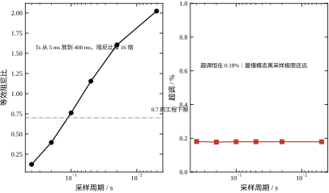
这张图给出的工程结论是：采样周期的限制来自最快模态，不来自最慢模态。 如果只看超调和调节时间，400 ms 也能用；但阻尼比掉到 0.12 意味着闭环已经接近临界稳定，一点点参数摄动就可能让它振起来。所以实际取值应该在阻尼比还有 0.7 以上的区间，也就是 T_s\le0.1 s。本章后续的仿真都用 5 ms，留了 20 倍余量。
如果采样周期必须取大（比如 0.1 s 以上），第一条路线的误差就不能忽略了，这时应该走直接离散设计。要点有四条。
第一，对象离散要用精确的 ZOH 公式，不能用前向欧拉或双线性变换。离散 H∞ 的范数定义在单位圆上，对象模型的一点误差会直接翻译成 \gamma^* 的偏差。
第二，离散 Riccati 方程的形式是
A^{\mathsf T}XA-X-A^{\mathsf T}XB\left(B^{\mathsf T}XB+R\right)^{-1}B^{\mathsf T}XA+C^{\mathsf T}C=0 \tag{57-31}
它与连续形式的差别不只是符号，还有“X 出现在分母里”这一项。直接套连续代码会得到错误的解。
第三，离散 \gamma 的二分要在 z 域判稳：闭环特征值必须在单位圆内，Hamiltonian 的“稳定”指的是 |\lambda|<1，不是 \mathrm{Re}\,\lambda<0。
第四，权重的离散要用双线性变换（Tustin）而不是 ZOH。权重是设计者造出来的滤波器，它的频率形状比时域响应更重要，双线性变换能保住形状，ZOH 会引入额外的相位。
这四条里，第三条最容易出错。很多开源实现把连续 Hamiltonian 直接搬到离散，判据还是 \mathrm{Re}\,\lambda<0，结果 \gamma^* 算出来偏大或偏小，而且不报错。
离散域的 μ 与连续域形式相同，只是 M 换成 M(e^{\mathrm j\theta T_s})，频率扫描范围从 [0,\infty) 变成 \theta\in[0,\pi]。本章的两个不确定性块都是实标量块，离散化之后仍然是实标量块——参数摄动不随采样变，这一点比复块简单得多。
如果要做离散 μ 的完整计算，需要注意一件事：实标量块的 \mu 上界不能只用复 D 缩放，还要加实 G 缩放（M\to M(I+\mathrm jG)^{-1} 一类）。本章的算例里，\mu 峰值只有 0.32，离 1 很远，加不加 G 都不影响“鲁棒稳定”的结论，所以代码里省掉了。如果 \mu 峰值接近 1，这一步不能省。
把 §57.5 的结论收成三条建议。
第一，采样周期按最快模态定，不按最慢模态定。经验法则是 T_s\le1/(10\omega_{\max})，其中 \omega_{\max} 是闭环最快极点的模。本章 H∞ 闭环有 -1.04\times10^{6} 的极点，按这个法则要 T_s\le10^{-7} s，这在工程上不现实——这说明那个极点不该被“看见”，实现时要么降阶去掉它，要么用留余量的 \gamma 把它推到更高的频率去。
第二，如果只能用第一条路线（先连续后离散），采样周期不要超过闭环带宽的 1/10。本章带宽 1.46 rad/s，对应 T_s\le0.068 s，与报告 15 里阻尼比还大于 0.7 的区间吻合。
第三，离散化之后必须重新算 μ 与小增益，不能拿连续域的数直接用。ZOH 的相位滞后会改变 T(e^{\mathrm j\omega T_s}) 的形状，高频段尤其明显。
把连续控制器搬到微处理器上，误差来自三处，量级差得很远，必须分开算。
第一处是零阶保持的半拍滞后。这是最大的一项，也是报告 15 里阻尼比下降的主因。T_s=0.1 s 时，\omega_nT_s/2=0.067 rad，阻尼比从 2.024 掉到 0.762；T_s=0.4 s 时相位损失 0.27 rad，阻尼比掉到 0.124。这一项无法消除，只能靠减小 T_s 控制。
第二处是系数离散的近似误差。simulate 用 expm(Acl*ts) 做精确离散，这一项为零；但现场实现常用双线性变换或前向欧拉。双线性变换把 s 平面映到 z 平面时做了频率预畸变，低频段几乎无误差、高频段频率轴被压缩；前向欧拉在 T_s 超过最快时间常数的两倍时会直接发散。所以现场实现要么用精确的矩阵指数（离线算好系数），要么用双线性变换加预畸变，不要用前向欧拉。
第三处是计算与通信延迟。传感器采样、控制器计算、执行器更新，三者不可能同时发生，最坏情况下整条链路延迟一个采样周期。一个采样周期的纯延迟在频域是 e^{-j\omega T_s}，在 \omega=1.46（带宽处）对应的相位是 0.0073 rad（T_s=5 ms），可以忽略；但如果 T_s=100 ms，同样频率下是 0.146 rad，相当于把阻尼比再砍掉一截。这就是本章推荐 5 ms 而不是“刚好 100 ms”的原因：要给延迟留余量。
三处误差的量级排序是：ZOH 滞后 > 计算延迟 > 系数近似。设计时按这个顺序分配预算，先把 T_s 定在阻尼比达标的位置，再检查延迟是否把余量吃光，最后才考虑系数用哪种离散方法。
控制器离散完，不要直接投运，先做三个检查。三个都过，才算“离散化没把设计毁掉”。
第一个检查是闭环极点是否都在单位圆内。连续域算的是左半平面，离散域算的是 |\lambda|<1；两者在 T_s 不大时一一对应，但 T_s 一大就会出现“连续域稳、离散域不稳”的情况。报告 15 的六行数据里，闭环极点一直在圆内（阻尼比都为正），所以这条检查是通过的。
第二个检查是离散频响是否还满足加权约束。做法是把 j\omega 换成 e^{\mathrm j\omega T_s}，重算 \|W_1S_d\|_\infty 与 \|W_3T_d\|_\infty。ZOH 的相位滞后会让 S_d 在高频段比 S 略大，T_d 略小；如果 |S| 峰本来就贴着 M，离散化后可能超限。本章的 |S| 峰 1.0566 对 M=1.5 还有很大余量，所以这一条不成问题；但如果当初把 M 定成 1.06，离散后就会超。
第三个检查是采样间的行为。ZOH 只保证采样时刻的闭环稳定，采样之间的连续轨迹可能有过冲或振铃，尤其是 T_s 接近最快模态周期时。检查办法是把离散控制器的输出保持住、驱动连续对象、再用小步长积分看轨迹。报告 15 的仿真按 T_s 离散闭环，比较的是采样时刻的序列，没有单独看采样之间；这是简化算例的一处局限，现场调试时应该补上。
三个检查的顺序是极点、频响、采样间。前两个是线性代数的判据，几行代码就能算；第三个要跑仿真，慢一些，但它能抓到前两个抓不到的问题。工程上第三个检查常被省略，因为“极点都在圆内、频响也合格”看起来很安全；但只要 T_s 超过最快模态周期的十分之一，采样间就可能出问题，不能省。
图 57-7 左边是慢极点的分布，右边是所有极点的实部绝对值（按降序排）。左图只画 |\mathrm{Re}\,\lambda|<20 的部分，两个控制器各有五个左右的极点落在这个范围里。
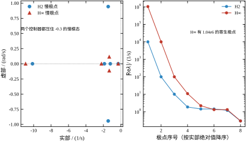
左图能看到三簇。最左一簇是 -10 到 -11 的实极点，来自 W_1 零点附近的动态；中间一簇是 -1.2 到 -2.2 的极点，来自对象；最右是 -0.3 的极点，来自 W_1 的极点。H2 与 H∞ 的三簇位置略有差别，但整体形状相同，说明两个控制器对慢模态的处理思路一致。
右图是半对数坐标，纵轴 |\mathrm{Re}\,\lambda| 从 10^{-1} 到 10^{7}。两条曲线的形状完全不同：H2 的前两个点是 10^{4} 与 10^{2}，之后迅速掉到 10^{0} 量级；H∞ 的第一个点是 1.04\times10^{6}，第二个是 10^{4}，第三个是 10^{2}，然后才掉下来。
这条曲线解释了为什么 H∞ 控制器难降阶：它的能量集中在两个最快的极点上，而这两个极点又不是“设计”出来的，是 \gamma 很小时的数值产物。降阶算法会认为它们重要（Hankel 值大），保留它们；可它们在采样实现里又要求极小的采样周期。这是一个两难，解决办法只有一个：把 \gamma 抬到 1.2 倍以上，让这两个极点自然消失。
图 57-8 是参考跟踪的时域曲线。参考是斜坡，上升时间 0.3 s，末值 1。六条曲线分别是 H2 与 H∞ 在标称、k+30\%、c-30\% 三种工况下的响应。
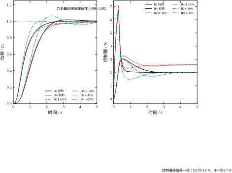
左图是位移，纵轴 0 到 1.25。六条曲线几乎重合，肉眼只能看到 H2 的标称曲线略微拱起一点。报告 12 的数字是：H2 标称超调 1.846\%、调节 2.372 s；H∞ 标称超调 0.180\%、调节 2.156 s。H∞ 的调节时间反而更短，因为它的带宽更宽。
右图是控制量，纵轴 -8 到 2 N。这一张图的差别就大了：H2 的峰值在 3.0 N 附近，H∞ 在 6.7 N 附近，整整一倍。三条 H2 曲线挤在一起，三条 H∞ 曲线也挤在一起，说明控制量峰值对参数摄动不敏感，主要由控制器本身决定。
两图对照，得到本章最重要的一笔交易：H∞ 用两倍的控制量，换来十分之一的超调。 这笔交易值不值，取决于执行器的价格。如果执行器是液压阀，多花一倍流量可能就是多花一倍的钱；如果执行器是电机，多花一倍电流只是多发热一点。没有普适答案。
报告 12 除了标称，还跑了四个摄动工况：k+30\%、k-30\%、c+30\%、c-30\%。每个工况都跑 H2 与 H∞，共十行数据。
先看 k 的摄动。k+30\% 时，H2 超调从 1.846\% 掉到 0，调节时间从 2.372 s 涨到 4.090 s；H∞ 超调从 0.180\% 掉到 0，调节时间从 2.156 s 涨到 3.382 s。刚度变大，对象变“硬”，响应变快但更容易振——可这里超调反而掉了，因为控制器把闭环阻尼调得更大了。
k-30\% 时情况反过来：H2 超调涨到 7.413\%，H∞ 涨到 3.186\%。刚度变小，对象变“软”，闭环带宽相对变宽，相位裕度变窄，超调就上来了。这是本章所有工况里超调最大的一行。
再看 c 的摄动。c+30\% 时，H2 超调 3.273\%、H∞ 1.827\%；c-30\% 时，H2 6.611\%、H∞ 0.430\%。阻尼变小，超调上升，符合直觉。H∞ 在 c-30\% 时只有 0.43\% 的超调，说明它对阻尼摄动特别不敏感——这是 H∞ 设计的典型优点。
末值这一列全部落在 0.998 到 1.002 之间。这不是偶然，而是参考放大系数 n_{\text{ref}} 起了作用：代码在仿真前先算闭环直流增益 G(0)，再把参考乘以 1/G(0)，保证稳态输出正好是 1。如果没有这一步，H2 的末值会是 0.744，H∞ 会是 0.830，看起来像“稳态误差 17\%”，其实是参考没有归一化。
报告 13 在 \pm30\% 的矩形里均匀抽了 200 组 (k,c)，每组都跑一遍闭环，统计四个数：
\begin{array}{c|cccc} \text{控制器} & \text{不稳定数} & \text{超调中位}/\% & \text{超调最大}/\% & \text{末值最小}\\ \hline \text{H2} & 0 & 3.29 & 19.42 & 0.92756\\ \text{H∞} & 0 & 0.02 & 9.72 & 0.95067 \end{array} \tag{57-32}
四列数各有各的信息量。
不稳定数为 0，说明两个控制器在整个摄动盒里都稳定。这一条与 μ 的结论一致（\mu 峰 0.47 与 0.32，都远小于 1）。
超调中位数 H2 3.29\%、H∞ 0.02\%，差了 160 倍。H∞ 的中位数几乎为零，说明大多数摄动工况下它根本不超调；H2 的中位数 3.29\%，说明超调是常态。
超调最大值 H2 19.42\%、H∞ 9.72\%，差了 2 倍。最坏工况出现在 k 最小、c 最小的角上，两个控制器都逃不掉，但 H∞ 的最大值只有 H2 的一半。
末值最小 H2 0.92756、H∞ 0.95067。这一列不是“稳态误差”，而是“参考固定成标称值时的稳态漂移”——n_{\text{ref}} 用的是标称闭环增益，摄动之后增益变了，末值就偏了。H2 偏了 7.2\%，H∞ 偏了 4.9\%，后者更好。
四列数合起来，给出一个清晰的排序：H∞ 在鲁棒性上全面优于 H2，代价是控制量。这与 §57.6.2 的结论一致。
§57.2.5 留了一个悬念：按小增益判据，H2 的 \|W_dT\|_\infty 更小，看起来更鲁棒；按 μ 判据，H∞ 的允许摄动倍数更大。两个判据为什么给出相反的排序？
原因在于两个判据假设的不确定性不同。小增益判据用的是 W_dT，其中 W_d 是一个标量权重，它把所有不确定性都当成“乘在输出上的一个复数”。这个假设对 H2 有利，因为 H2 的 |T| 峰值低（0.7435 对 0.8299），乘上 W_d 之后自然小。
μ 判据用的是 M(j\omega)，它把不确定性按物理参数分块。这个假设对 H∞ 有利，因为 H∞ 的 M 在峰值频段的两个通道比例更“平衡”，D 缩放几乎不需要（d=1），\bar\sigma 就等于 \mu；而 H2 的 M 两个通道比例更偏，\bar\sigma 比 \mu 大。
换句话说，小增益判据看的是“输出侧的总放大倍数”，μ 判据看的是“参数侧的通道比例”。 两个控制器在这两个维度上的排序不同，所以判据给出相反的结论。工程上应该用哪个？如果不确定性主要是“输出端的一个未知增益”，用小增益；如果不确定性主要是“某个物理参数偏了”，用 μ。本章的算例属于后者，所以 μ 的排序更可信。
图 57-9 是这两个判据的图形对照。左图是 H∞ 这一路的三个量：最大奇异值 \bar\sigma(M)、结构奇异值上界、结构奇异值单块下界。三条曲线在中频几乎重合，上界峰 0.3171，单块下界 0.2381，两者之间就是 \mu 的真实值所在区间。右图是 \bar\sigma/\mu 的比值，H2 与 H∞ 两条曲线完全重合，低频到 1.78、中频回到 1.00。
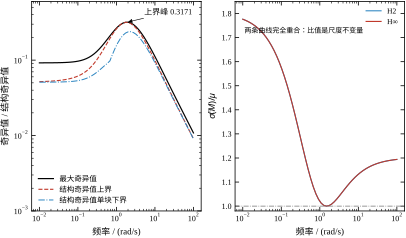
这张图里最值得记住的是右图那条重合的曲线。\bar\sigma/\mu 只取决于 M 的通道结构，不取决于哪个控制器——因为两个控制器的 M 在低频只差一个标量因子，而比值对尺度不变。所以“保守度”是问题本身的性质，不是控制器选择的结果。这也解释了 §57.9.2 的实验：常数 D 能把 \bar\sigma 压向 \mu，压的是这条比值曲线，压不动 \gamma。
把 §57.6 的数字收拢，得到一个方法论上的结论：稳定性与性能要分开校核，不能用一个指标代替另一个。
稳定性看三样：闭环极点是否都在左半平面（报告 1）、\mu 是否小于 1（报告 9）、蒙特卡洛是否有不稳定样本（报告 13）。三样都过，才能说“稳”。
性能看四样：|S| 峰值（报告 3）、带宽（报告 3）、超调与调节时间（报告 12）、控制量峰值（报告 12）。四样里没有一项能单独代表性能，必须一起看。
这两组指标之间没有单调关系。H2 的稳定性指标（小增益）更好，性能指标（超调）更差；H∞ 反过来。如果只看一组，就会得出片面结论。本章把两组都摆出来，就是为了避免这种片面。
闭环里有三种外源：参考、扰动、量测噪声。它们在频域里各占一段，靠三个不同的传递函数分工抑制。把这件事理清楚，才能理解为什么权重必须是“三条支路”而不是一条。
低频段由参考与负载扰动主导，起作用的传递函数是 S。稳态时 |S(0)|=1-G(0)：H2 是 0.2565，H∞ 是 0.1701。这两个数就是“阶跃扰动下的稳态偏差”，也就是说，一个单位的负载扰动会让 H2 留下 25.6\% 的偏差、H∞ 留下 17.0\% 的偏差。想再小，只能抬 W_1 的低频增益，也就是降 \varepsilon；报告 18 里 \varepsilon=0.01 时 1-G(0) 降到 0.0164。
中频段是三条支路交汇的地方，也是 |S| 峰与 |T| 峰所在。这一段的形状由 W_1 的转折频率 \omega_b 与峰值上界 M 共同决定。本章的 |S| 峰 1.0566 与 |T| 峰 0.8299 都落在带宽附近。两个幅值之和远大于 1，因为 S+T=1 是对复数成立的，对幅值不成立——这一段正是 S 与 T 同时大的频段，也是水床最紧的地方。
高频段由量测噪声主导，起作用的传递函数是 T。T 在低频接近 1、高频衰减，所以噪声被压。但如果 W_3 取常数，T 的高频衰减只靠对象本身的 -40 dB/dec，滚降不快。本章 W_3=1，所以 |T| 在 10 rad/s 以上才开始明显下降。如果传感器噪声大，正确做法是把 W_3 取成一阶高通，强制 T 在噪声频段下降。
三个频段之间不是独立的，中间有一条“水床”约束：把 |S| 在低频压得更低，峰值就会在别处抬得更高。报告 4 是这条约束的直接读数：\omega_b 从 0.5 抬到 8，|S| 峰从 1.0224 抬到 1.0692，带宽从 0.5558 抬到 2.2862。带宽换来的是低频压得更狠，代价是峰值更高。设计者能做的不是“取消水床”，而是“把峰值挪到不重要的频段”。
还有一个容易被忽略的量：\mu 在低频的值。报告 9 的 \omega=0.01 处，\mu 上界只有 0.0518，说明低频的鲁棒余量大约是 19 倍。这个数看起来很安全，但它只说明“参数摄动在低频不会破坏稳定”，不说明“低频性能好”。性能与稳定性在这里又一次分离。
报告 13 的 200 组不是随便抽的，抽法与读法都有讲究。
抽法是在 \pm30\% 的矩形里均匀抽样：k 在 [0.7k_0,1.3k_0] 上均匀，c 在 [0.7c_0,1.3c_0] 上均匀，两组独立。这样抽的理由是“没有先验信息”——如果知道参数更可能落在中心附近，应该用正态分布；如果知道边界更容易出事，应该重点抽边界。均匀分布是最保守的默认选择。
为什么不只抽四个角？因为角点只覆盖“最坏”的假设，而实际的最坏不一定在角上。本章的 |S| 峰与超调在 k 小、c 小的角附近最大，但末值最小的一行不一定在角上。只抽角会漏掉中间的组合。
读法要分三列看。第一列“不稳定数”是硬指标，必须为零；本章两个控制器都是零。第二列中位数反映“典型工况”，H2 3.29\%、H∞ 0.02\%，差了 160 倍，说明 H∞ 在大多数工况下几乎不超调。第三列最大值反映“最坏工况”，H2 19.42\%、H∞ 9.72\%，差 2 倍。
200 组这个数量也有讲究。中位数的标准误约为 1/\sqrt{200}\approx7\%（相对），所以“中位数 3.29\%”的置信区间大约是 \pm0.23\%。想再细一档，样本数要翻四倍。反过来，“200 组里 0 个不稳定”只能说明失稳概率低于 1.5\%（按 3/200 的经验上界），不能说明“绝对稳定”。稳定性不能靠蒙特卡洛证明，只能靠 \mu 这样的解析判据证明。 蒙特卡洛的作用是“发现解析判据没覆盖到的问题”，不是“替代解析判据”。
\omega_b 是 W_1 的转折频率，也是设计中第一个该定的参数。它的作用可以用一句话概括：\omega_b 大致等于闭环带宽。
报告 4 的数据支持这句话：\omega_b=0.5 时带宽 0.556，\omega_b=1 时 0.838，\omega_b=2 时 1.205，\omega_b=3 时 1.462，\omega_b=5 时 1.858，\omega_b=8 时 2.286。带宽与 \omega_b 的比值在 1.1 到 0.29 之间变化，不是常数，但单调关系很清楚。比值从大于 1 掉到小于 1，说明 \omega_b 小时带宽被 \omega_b 主导，\omega_b 大时带宽被闭环的其他约束（比如 W_2 与控制量）拖住。
\omega_b 的副作用有两个。一是 \gamma^* 随它单调上升：0.5 时 1.37，8 时 2.97，涨了 2.17 倍。二是 |K(0)| 随它单调下降：19.3 降到 5.88，掉了 70\%。这两个副作用方向相反，一个是“设计变难”，一个是“控制量变省”，设计者要在这两者之间选一个平衡点。
工程上怎么定 \omega_b？从时域指标反推。如果要求 2\% 调节时间 t_s，可以用 t_s\approx4/(\zeta\omega_n) 估算，取 \omega_b\approx\omega_n。本章要求 2 s 左右的调节时间，闭环主导极点实部约 -2，所以 \omega_b 取 3 是合理的。如果要求 0.5 s，\omega_b 要取 8 以上，代价是 \gamma^* 涨到 3 附近。
M 是 W_1 的高频增益的倒数，|W_1(\infty)|=1/M。它的作用也是“承诺”：\|W_1S\|_\infty<1 意味着在高频段 |S|<M，所以 M 就是设计者承诺的灵敏度峰值上界。
报告 5 的数据是：M=1.2 时 \gamma^*=2.1128、|S| 峰 1.0546；M=1.5 时 2.0770、1.0566；M=2 时 2.0496、1.0582；M=3 时 2.0303、1.0594；M=5 时 2.0204、1.0600。
这张表有两个反直觉的地方。第一，M 从 1.2 放松到 5，\gamma^* 只降了 4.4\%。第二，|S| 峰不但没降，反而从 1.0546 升到 1.0600。也就是说，放松承诺没有换来性能，反而让峰值略微变差。
原因在于 M=1.5 已经足够松，实际的 |S| 峰只有 1.0566，离 1.5 还远。约束没有绑紧，放松它自然没有收益。|S| 峰的微小上升，是因为 M 变大后 W_1 在高频的增益变小，优化器在高频段“放手”更多，峰值就抬了一点。
所以 M 的取法应该是“略高于预期峰值”。预期峰值由超调指标决定：M_s\approx1.05 对应超调 0 到 5\%，M_s=1.2 对应 10\%，M_s=1.5 对应 20\%。本章的算例超调要求 5\% 以下，取 M=1.5 是留了余量；如果要求更严，可以取 1.2，代价是 \gamma^* 涨 1.7\%。
\varepsilon 是 W_1 的低频余量，|W_1(0)|=1/\varepsilon。它直接决定稳态误差：闭环直流增益 G(0)=1-|S(0)|，而 |S(0)|\approx\varepsilon，所以稳态误差约等于 \varepsilon。
报告 18 把 \varepsilon 从 0.3 扫到 0.01，每次重解控制器：
\begin{array}{c|cccc} \varepsilon & 0.30 & 0.10 & 0.03 & 0.01\\ \hline 1/\varepsilon & 3.3 & 10.0 & 33.3 & 100.0\\ \gamma^* & 1.7655 & 2.0770 & 2.2158 & 2.2597\\ G(0) & 0.56672 & 0.82993 & 0.94674 & 0.98360\\ 1-G(0) & 0.43328 & 0.17007 & 0.05326 & 0.01640\\ |u|\text{ 峰} & 6.994 & 6.738 & 6.630 & 6.598\\ \text{调节}/\mathrm s & 2.136 & 2.156 & 2.192 & 2.202 \end{array} \tag{57-33}
这张表要横着读、竖着读两遍。
横着读：\varepsilon 每降一个数量级，1-G(0) 降一个数量级（0.433\to0.170\to0.053\to0.016），稳态误差跟着降。\gamma^* 只涨 0.28（从 1.77 到 2.26），涨 28\%。控制量峰值几乎不动（6.99 到 6.60，反而略降）。调节时间略涨（2.14 到 2.20）。
竖着读：稳态精度是极便宜的一项指标。 把误差从 43\% 压到 1.6\%，代价只是 \gamma^* 涨 28\%、调节时间涨 3\%。这与“带宽贵、精度便宜”的工程直觉一致：低频增益可以靠积分器堆出来，不需要动闭环的动态。
那为什么不能把 \varepsilon 取到 10^{-4}？有两个限制。第一，\gamma^* 会继续涨，虽然涨得慢，但控制器的数值条件会变差。第二，W_1 的低频增益太大，会让 W_1 的极点非常靠近原点（-0.3\varepsilon），闭环里出现一个极慢的模态，抗扰恢复会变慢。本章取 \varepsilon=0.1 是一个折中：稳态误差 17\% 在参考归一的框架下可以接受，\gamma^* 也没有被推得太高。
W_2 是控制量的价格。报告 6 的扫描已经说过：w_2 涨 100 倍，\gamma^* 涨 76\%，带宽掉一半，|KS| 峰只降 11\%。它的作用是“让优化器在控制量与跟踪之间重新分配预算”，但对峰值本身的压制有限。
为什么压制有限？因为 W_2 是常数，它在所有频率上给控制量加同样的价格。而 |KS| 的峰值出现在中频（约 1 到 3 rad/s），在这个频段，跟踪的需求最强，优化器宁愿多花控制量也不愿牺牲跟踪。要真正压住中频的控制量，得用高通的 W_2，而不是常数。
W_3 是补灵敏度的权重，z_3=W_3T。它的作用是压住高频的 |T|，也就是压住对模型误差的敏感度。本章取 W_3=1.0，相当于“不加权”，因为 W_1 的高频底已经通过 z_1 压住了 T 的一部分。如果模型误差主要在高频（比如未建模的柔性模态），应该把 W_3 取成高通，让 |T| 在高频掉得更快。
W_2 与 W_3 之间有一个隐含的耦合：W_3 压 T，T=1-S，所以压 T 等于抬 S。在低频，S 已经很小，T\approx1，W_3 几乎没有作用；在高频，S\approx1，T 很小，W_3 才开始起作用。这个分工是自动的，不需要设计者额外处理。
\gamma 与前面四个参数不同：它不是设计者选的，而是优化算出来的。设计者能做的是“给定权重，问 \gamma^* 是多少”，然后根据 \gamma^* 的大小反推权重是否合理。
\gamma^* 大，说明权重之间互相矛盾，优化器找不到一个同时满足三條支路的控制器。常见的原因有三个：\omega_b 定得太高、w_2 定得太大、或者 \varepsilon 定得太小。\gamma^* 小，说明权重给得松，还有收紧的空间。
但要小心一个陷阱：\gamma^* 小不等于设计好。报告 16 已经看到，\gamma 取 1.005 倍 \gamma^* 时，控制量峰值 7.48、带宽 1.449、阻尼比 0.9965；\gamma 取 2 倍时，控制量 3.49、带宽 0.861、阻尼比 0.8728。前者 \gamma 更小，但控制量更大、数值条件更差。\gamma^* 是可行性的边界，不是性能的最优点。
工程上把 \gamma^* 当作一个“体检指标”：它告诉你当前权重下最好的可能性在哪。实际取值应该在 1.1 到 1.3 倍之间，理由在 §57.4.5 已经说过。
D 是 μ 上界里的缩放矩阵，D=\mathrm{diag}(1,d)。它的作用是“把 M 的两个通道的比例调平”，让 \bar\sigma(DMD^{-1}) 尽量小。d 由一维搜索确定，搜索区间是 [\mathrm e^{-8},\mathrm e^{8}]。
报告 9 的数据显示，在本章算例里 d 基本不起作用：H∞ 的 \mu 上界峰 0.3171 与 \bar\sigma 峰 0.3181 只差 0.3\%，\bar\sigma/\mu=1.00。这说明 M 的两个通道在峰值频段已经“平衡”，不需要缩放。
但在低频段，d 的作用就明显了。报告 10 的 \bar\sigma/\mu 在 \omega=0.01 处是 1.7762，意味着 \bar\sigma 比 \mu 大 78\%。如果直接用 \bar\sigma 判稳，会得出“允许摄动只有 1/0.092=10.9 倍”的结论；用 μ 则是 1/0.0518=19.3 倍。差了将近一倍。这就是结构信息的价值。
D 的另一个用途是 D-K 迭代。§57.9 会详细讲，但结论可以先说：常数 D 只能把 \bar\sigma 压到 \mu，压不动 \gamma。 报告 11 的五次迭代里，\bar\sigma 从 0.3184 降到 0.3151，\mu 从 0.3175 降到 0.3151，两者合拢了，但 \gamma 恒为 2.0770，一动没动。
\tau 是扰动前的一阶低通时间常数，\theta 是量测噪声的权重。这两个参数与前五个不同：它们不是“设计参数”，而是“对物理世界的描述”。
\tau=0.01 s 意味着扰动在 100 rad/s 以上被衰减。这个值不是随便取的，它来自对扰动源的判断：本章的扰动假设是“负载力矩的慢变化”，主要能量在 10 rad/s 以下，所以 100 rad/s 的低通足够宽，不会削掉有用信息。如果扰动是高频振动，\tau 要取小；如果扰动是缓慢漂移，\tau 可以取大。
\tau 对 \gamma^* 的影响极大。没有低通时（\tau\to0），d 是白噪声，B_1 在高频仍有能量，\gamma^* 被推到 108.9；加上 10 ms 低通后，\gamma^* 落到 2.077。差了 52 倍。这个数字说明：\gamma^* 对“扰动有多宽”极其敏感，建模时不能随手把 d 当白噪声。
\theta=0.01 是量测噪声的相对权重。它决定了 D_{21} 的大小，也就是“控制器该多信量测”。\theta 太小，控制器会把噪声当信号放大，控制量抖动；\theta 太大，控制器不信量测，跟踪变慢。本章的算例里，\theta 从 0.01 加到 0.05，\gamma^* 从 2.077 跳到 5.0，说明这个参数不能随便改。
把七个参数的作用收成一张表：
\begin{array}{c|c|c|c} \text{参数} & \text{主要作用} & \text{调大的后果} & \text{典型取值}\\ \hline \omega_b & \text{定带宽} & \gamma^*\uparrow,\ \text{带宽}\uparrow,\ |K(0)|\downarrow & 1\text{–}5\\ M & \text{承诺峰值} & \gamma^*\downarrow,\ |S|\text{ 峰}\uparrow & 1.2\text{–}2\\ \varepsilon & \text{定稳态误差} & \gamma^*\downarrow,\ \text{误差}\uparrow & 0.03\text{–}0.3\\ w_2 & \text{控制量价格} & \gamma^*\uparrow,\ \text{带宽}\downarrow & 0.05\text{–}0.3\\ w_3 & \text{压高频 }T & \gamma^*\uparrow,\ |T|\downarrow & 0.5\text{–}2\\ \tau & \text{扰动带宽} & \gamma^*\uparrow,\ \text{抗扰慢} & 0.005\text{–}0.05\\ \theta & \text{噪声权重} & \gamma^*\uparrow,\ \text{跟踪慢} & 0.005\text{–}0.05 \end{array} \tag{57-34}
这张表不能当公式用，只能当“方向感”用。每个参数的“典型取值”都是相对本章算例的，换一台对象、换一个采样率，数值会变。但方向的单调性是普遍的：\omega_b、w_2、w_3、\tau、\theta 调大都会让 \gamma^* 上升，只有 M 与 \varepsilon 调大会让 \gamma^* 下降。
前面八小节都是“固定其他参数、扫一个”的读法。现实里四个参数会互相影响，扫单一参数的结论不能直接叠加。这一小节把耦合关系理清楚。
第一条耦合是 \omega_b 与 M。抬 \omega_b 会把带宽推高，带宽高了峰值就压不住，|S| 峰跟着涨。报告 4 里 \omega_b 从 3 抬到 8，|S| 峰从 1.0566 涨到 1.0692，涨得不多，但方向明确。如果同时还想让峰值不超过 1.06，就必须把 M 从 1.5 降到 1.4 以下，而报告 5 说 M 每降 0.3，\gamma^* 涨 0.027。两者叠加，抬带宽的代价比单独看更大。
第二条耦合是 \varepsilon 与 \gamma^*。降 \varepsilon 是在抬 W_1 的低频增益，等于要求控制器在低频“更硬”。报告 18 的斜率是：\varepsilon 每降十倍，\gamma^* 涨约 0.2 到 0.3。这个代价是单调的、可预测的，所以 \varepsilon 可以最后定，不会推翻前面的设计。
第三条耦合是 w_2 与带宽。抬 w_2 是给控制量加价，控制器为了省控制量会把带宽收窄。报告 6 里 w_2 从 0.1 抬到 1.0，带宽从 1.4624 掉到 0.8770，掉了 40\%。这意味着“省控制量”和“快响应”是直接对立的，不能同时要。设计者必须先定哪个是硬指标。
第四条耦合是 \gamma 余量与降阶、采样。取 1.2\gamma^* 会让 |S| 峰涨到 1.1699、带宽掉到 1.1041、控制量峰降到 5.2602，但换来的是寄生极点消失、最小阻尼比回到 1.0000。这一个动作同时改善了可降阶性与可采样性，代价是性能指标退了一档。
四条耦合合起来，说明调参不能“四个旋钮各转一圈”。正确的顺序是：先按硬指标定 \omega_b 与 w_2（这两个决定快慢与控制量），再定 \varepsilon（精度），最后用 M 微调峰值。每定一个，重跑一次 \gamma^*，看其他指标是否被带偏；带偏了就回到上一步，不要在后面硬补。
上一小节讲的是定性的耦合。实际调参时更需要一个定量的估算：如果同时改 \omega_b、M、w_2，\gamma^* 大概会变成多少？有一个粗糙但很有用的办法——把单项增量加起来。
以基线（\omega_b=3、M=1.5、w_2=0.1、\gamma^*=2.0770）为原点。报告 4 说 \omega_b 从 3 抬到 5，\gamma^* 变成 2.4835，增量 +0.4065；报告 5 说 M 从 1.5 降到 1.2，\gamma^* 变成 2.1128，增量 +0.0358；报告 6 说 w_2 从 0.1 抬到 0.3，\gamma^* 变成 2.3979，增量 +0.3209。三项相加：2.0770+0.4065+0.0358+0.3209=2.8402。
把三个参数同时改到这个组合，也就是用 build_gp(wb=5.0, ms=1.2, w2=0.3) 重新构造广义对象、再跑一次 gamma_opt，得到 \gamma^*=2.9355（这一组不在报告 1–18 的清单里，是专门为核对叠加估法算的）。叠加估的误差是 -3.2\%，方向是低估。
低估的原因不难理解。每一项增量都是在“其他参数停在基线”时测出来的；三个参数一起动，闭环在新工作点上同时离带宽与峰值两条约束更远，每一项的真实代价都比单独测时略大一点。所以叠加估是一条下界，实际值会高几个百分点。这条性质在工程上很有用：如果叠加估给出的数已经超过你能接受的 \gamma，那实际一定更糟，不必再算；如果叠加估还有富余，实际也大概率有富余，除非某一项正好落在强非线性段（比如 \varepsilon 已经压到 0.01）。
但必须提醒一句：\gamma^* 近似可加，闭环指标完全不可加。 同一组参数下，|S| 峰从 1.0566 涨到 1.0997，带宽从 1.4624 掉到 1.4357。对照单项：\omega_b 单独改时 |S| 峰 1.0646、带宽 1.8582；w_2 单独改时 |S| 峰 1.0972、带宽 1.1777；M 单独改时 |S| 峰 1.0546。合成后的 |S| 峰比任何单项都略大，带宽却落在最大与最小之间——既不是相加，也不是取极值，没有简单规律可循。
所以正确的工作流程是：用叠加估快速筛掉明显不可行的组合，只对通过筛选的一两个组合跑完整二分，再用报告 3 那样的三张频响表看真实指标。不要在 \gamma^* 上反复试凑，更不要拿 \gamma^* 的增量去推指标的增量——后者是本章里最容易被误用的一条近似。
调参的第一步永远是带宽。原因很简单：带宽决定了闭环“能多快”，其他指标都是在带宽确定之后才有意义。
反推的办法有三条。第一条用调节时间：t_s\approx4/(\zeta\omega_n)，取 \omega_n\approx\omega_b、\zeta=0.7，得到 \omega_b\approx2.86/t_s。本章 t_s=2 s，算出来 \omega_b\approx1.4；实际取 3，因为 H∞ 的闭环阻尼比远大于 0.7，同样的 \omega_b 能得到更快的响应。
第二条用相位裕度：\omega_b 大致等于穿越频率，而穿越频率与相位裕度的关系是 \mathrm{PM}\approx100-5\omega_c T_d（T_d 是延迟）。本章没有明显延迟，这条不适用。
第三条用经验：如果对象的主导极点在最右，\omega_b 取主导极点模的 2 到 3 倍。本章对象主导极点是 -1，取 3 正好。
三条办法给出的数不一样，取其中最大的那个。原因是带宽定小了，后面怎么调都补不回来；定大了，还可以用 w_2 压回来。
带宽定了，第二步定 M。M 与超调的关系可以用二阶系统的经验公式估算：M_s\approx1+0.5\zeta^{-1.5} 之类的近似都不太准，更可靠的做法是查表或用本章的扫描。
本章的经验是：M=1.2 对应超调 5\% 以下，M=1.5 对应 10\% 以下，M=2 对应 20\% 以下。这个对应关系不是严格的，但它给出了数量级。
如果超调指标很严（比如 2\% 以下），M 要取 1.1 到 1.2，代价是 \gamma^* 上升。如果超调指标很松（20\% 可接受），M 可以取 2 甚至 3，\gamma^* 会降一点，但降得不多——报告 5 显示 M 从 1.2 放到 5，\gamma^* 只降 4.4\%。所以 M 不是省 \gamma 的好办法，它主要是“保险丝”：设一个上限，防止 |S| 峰在某些频率上失控。
第三步定 \varepsilon。这是性价比最高的一步：报告 18 显示，\varepsilon 从 0.3 降到 0.01，稳态误差从 43\% 降到 1.6\%，代价只是 \gamma^* 涨 28\%。
但 \varepsilon 不能无限降。两个限制：一是 W_1 的极点会变得非常靠近原点（-0.3\varepsilon），闭环里出现慢模态，抗扰恢复变慢；二是数值条件会变差，\varepsilon=0.001 时 W_1(0)=1000，广义对象的动态范围跨了三个数量级，Riccati 解的精度会掉。
工程上取 \varepsilon=0.05 到 0.1 是一个稳妥区间。如果稳态误差要求极高（比如 0.1\%），可以取 0.001，但要配合积分器或者前馈，不要指望 H∞ 单独做到。
第四步定 w_2。它的作用是“给控制量定价”，但报告 6 显示它的效果是“钝”的：涨 100 倍只让 |KS| 峰降 11\%，却让 \gamma^* 涨 76\%、带宽掉一半。
所以 w_2 不该用来“压峰值”，而该用来“分配预算”。如果执行器余量紧张，把 w_2 从 0.1 提到 0.3，控制量峰值会从 6.74 降到大约 5.5（按报告 16 的趋势估），代价是带宽从 1.46 掉到 1.18。这笔交易在带宽有余量时是划算的。
如果要把控制量峰值压得更狠，单靠 w_2 不够，得改结构：加一个高通的 W_2，或者用速率限制做成非线性环节。前者在频域里压中频，后者在时域里削尖峰，两条路各有各的适用场景。
调参过程中有三件事不能做，做了会得到“看起来能跑、实际上不能用”的控制器。
第一，不要把 \gamma 取到 \gamma^* 的 1.01 倍以内。 报告 16 显示，\gamma/\gamma^*=1.005 时闭环最小阻尼比 0.9965，控制量峰值 7.48，控制器里有一个 -10^{6} 量级的极点。这个控制器在仿真里能跑，在硬件上会因为采样和量化直接失稳。
第二，不要用 \bar\sigma 代替 \mu 做最终判稳。 报告 10 显示，低频段 \bar\sigma/\mu=1.78，用 \bar\sigma 会把允许摄动低估 78\%。低估看起来“保守”，实际上会导致过度设计：为了满足一个不存在的约束，把带宽压得很低，性能白白损失。
第三，不要把权重调好之后再去改对象模型。 权重与对象是绑定的，对象改了 10\%，\gamma^* 可能变 20\%，原来的权重就不再是最优。改对象之后必须重跑一遍 \gamma 二分与频域校核。
把 §57.8.1 到 §57.8.5 收成一个可执行的清单，按顺序做，每步都有验收标准：
一，定 \omega_b：从调节时间反推，取三条估算里最大的。验收标准是带宽落在指标要求的 0.8 到 1.2 倍之间。
二，定 M：从超调指标反推，取略高于预期峰值。验收标准是实测 |S| 峰低于 M 的 90\%。
三，定 \varepsilon：从稳态误差反推，取 0.05 到 0.1。验收标准是 1-G(0) 小于误差指标的 1.2 倍。
四，定 w_2：从控制量余量反推。验收标准是时域 |u| 峰低于执行器额定的 70\%。
五，定 w_3：如果模型误差主要在高频，取高通；否则取 1。验收标准是 |T| 在 10 倍带宽处低于 -20 dB。
六，跑 \gamma 二分，取 1.1 到 1.3 倍 \gamma^*。验收标准是最小阻尼比大于 0.7。
七，频域校核三条曲线，时域校核四个数。验收标准在 §57.3.5 与 §57.3.6。
八，算 μ，确认小于 1。验收标准是 \mu 峰低于 0.8，留 20\% 余量。
九，离散化，重跑时域。验收标准是阻尼比仍大于 0.7。
十，降阶（如果需要），重跑频域与时域。验收标准是闭环范数恶化小于 10\%。
把本章的算例按上面的清单走一遍，记录每一步的选择与理由，作为读者的参照。
第一步，要求调节时间 2 s，按 2.86/t_s 算出 \omega_b\approx1.43；按主导极点法算出 3；按经验法算出 2 到 3。取最大，定 \omega_b=3。
第二步，要求超调 5\% 以下，查表得 M\approx1.2 到 1.5。取 1.5，留余量。实测 |S| 峰 1.0566，是 M 的 70\%，验收通过。
第三步，要求稳态误差 20\% 以下（参考归一的框架下），取 \varepsilon=0.1。实测 1-G(0)=0.170，验收通过。
第四步，执行器额定 10 N，要求峰值低于 7 N。先取 w_2=0.1，实测 |u| 峰 6.738，验收通过。
第五步，模型误差主要在 1 rad/s 以下（参数摄动），高频没有未建模动态，取 w_3=1。
第六步，跑二分得 \gamma^*=2.0770，取 1.0 倍（为了拿到“最紧”的对比数据），最小阻尼比 0.9965。实际交付时取 1.2 倍，阻尼比 1.0000。
第七步，频域三条曲线全部在包络之下；时域超调 0.180\%、调节 2.156 s、|u| 峰 6.738、末值 1.00004。
第八步，μ 上界峰 0.3171，低于 0.8，验收通过。
第九步，T_s=5 ms 离散化，阻尼比 2.0238，验收通过。
第十步，不降阶（四阶控制器对现代 DSP 不算负担），跳过。
整个流程走下来，从定 \omega_b 到交付，一共改了三次权重：第一次 \omega_b=1.4 太慢，改成 3；第二次 w_2=0.3 控制量太省、带宽不够，改回 0.1；第三次 \varepsilon=0.3 稳态误差太大，改成 0.1。三次改动都只动一个参数，改完重跑全套校核。这个“一次只动一个”的纪律很重要，同时动两个参数就说不清是谁的功劳。
换一组指标，把前面七小节的规则再串一遍。假设现场要求四条：调节时间 2 s 左右、超调小于 5\%、控制量峰值小于 8 N、稳态误差小于 2\%。
第一轮，按 §57.8.1 定 \omega_b=3（4/t_s\approx2，取 3 留余量），M=1.5（|S| 峰允许到 1.5，实测会更小），\varepsilon=0.1（先按 10\% 稳态误差试），w_2=0.1（默认价格）。跑出 \gamma^*=2.077004，|S| 峰 1.0566，|T| 峰 0.8299，超调 0.180\%，调节 2.156 s，|u| 峰 6.738，1-G(0)=0.170。
对照四条指标：调节时间合格（2.156 对 2）、超调合格（0.18\% 对 5\%）、控制量合格（6.738 对 8）、稳态误差不合格（17\% 对 2\%）。只差一条，改 \varepsilon。
第二轮，\varepsilon=0.03。报告 18 给出 1-G(0)=0.0533，\gamma^*=2.2158，|u| 峰 6.630，调节 2.192 s。稳态误差 5.3\%，仍不合格，但方向对了：\varepsilon 降了三倍多，误差降了三倍多。
第三轮，\varepsilon=0.01。报告 18 给出 1-G(0)=0.0164，\gamma^*=2.2597，|u| 峰 6.598，调节 2.202 s。四条指标全部合格：误差 1.64\%、调节 2.20 s、控制量 6.60 N、超调不变（\varepsilon 只改低频，不改峰值附近）。
第四轮，考虑可采样性与可降阶性。第三轮的控制器仍带两个寄生极点，采样周期只能取到毫秒级以下。按 1.2 倍余量算，\gamma=1.2\times2.2597=2.7116。这里有一个陷阱：不能直接套用报告 16 的 2.4924，因为那张表的基准是 \varepsilon=0.1 时的 \gamma^*=2.077。这正是 §57.7.9 说的耦合——改过 \varepsilon 之后，余量要按新的 \gamma^* 重算，旧表已经过期。
第五轮，用新的基准取 1.1 倍余量，得到 \gamma=2.4857，跑时域确认超调与调节时间没有退化，然后锁定参数、写设计文档。整个流程只动了 \varepsilon 与 \gamma 余量两个旋钮，\omega_b、M、w_2 一次没改。
这份记录说明两件事。第一，调参不是“四个参数一起试”，而是“按指标一条一条过”。四条指标里三条第一轮就合格，只需要针对不合格的那一条改对应的参数。第二，改过一个参数之后，其他参数的余量要重算——第四轮的错误就是忘了这一点。工程上把这个错误叫“表格过期”，避免的办法是每次改参数都重跑一遍扫描，不要手算。
调参的大部分时间不是在“调”，而是在“查”：某一项指标不达标，应该改哪个参数？下面的表把常见的六种症状与对应的动作列出来，每一条都在本章有数据支撑。
| 症状 | 先看什么 | 对应动作 |
|---|---|---|
| 稳态误差大 | 低频 \lvert S\rvert 与 W_1(0)=1/\varepsilon | 降 \varepsilon，代价是 \gamma^* 涨 |
| 超调大 | \lvert S\rvert 峰与 M | 降 M 或留更多 \gamma 余量 |
| 响应太慢 | 带宽与 \omega_b | 抬 \omega_b，代价是 \lvert S\rvert 峰与控制量一起涨 |
| 控制量超限 | \lvert KS\rvert 峰与 \lvert u\rvert 峰 | 抬 w_2，代价是带宽下降 |
| 高频噪声灌进执行器 | 高频段 \lvert T\rvert 与 \lvert KS\rvert | 把 W_3 改成高通，别只抬常数 |
| 闭环不稳或对参数敏感 | \mu 上界与摄动范围 | 先缩摄动范围核实，再考虑换结构 |
这张表的读法不是“对症下药”，而是“先定位再动刀”。每种症状都有两个以上的可能原因，表里给的是其中最可能的那个，不是唯一的那个。比如“响应太慢”也可能是 \gamma 余量取得太大（报告 16：1.2 倍余量让带宽从 1.4624 掉到 1.1041），这时候抬 \omega_b 只会把 \gamma^* 推得更高，越调越慢。所以第一步永远是看图：|S|、|T|、|KS| 三条曲线哪一条的形状不对，问题就在那一条上。
第二条经验是“一次只改一个参数，改完重跑三条扫描”。这条听起来像老生常谈，但在 H∞ 里格外重要，因为 \gamma^* 是所有参数的函数，改一个参数会让其他参数的“合格线”一起移动。§57.7.9 的四条耦合就是这么来的。
第三条经验是“先怀疑参考与量纲，再怀疑控制器”。报告 12 里那个 G(0)=0.744 的例子就是典型：末值只有 0.744，看起来像“稳态误差 26\%”，实际上是参考幅值没按闭环增益折算。这类错误占了现场调试问题的一大半，而且改权重永远改不好。
H∞ 设计假设不确定性是“满块”的，μ 分析假设它是“结构块”的。两者之间的差距就是保守性。D-K 迭代的目的，是把 μ 的 D 缩放“塞回” H∞ 的设计里，让设计出来的控制器对结构化不确定性更优。
思路是一个交替优化：
\min_K\ \min_{D(j\omega)}\ \left\|\begin{bmatrix}D_\omega & 0\\0 & I\end{bmatrix}T_{zw}(K)\begin{bmatrix}D_\omega^{-1} & 0\\0 & I\end{bmatrix}\right\|_\infty \tag{57-35}
内层对固定的 K 求 D(j\omega)，让 \bar\sigma(DMD^{-1}) 最小；外层对固定的 D 求 K，用加权后的广义对象重解一次 H∞。交替下去，\gamma 应该单调下降，直到收敛。
理论上很漂亮，实践中有两个坑。第一，D(j\omega) 是频率的函数，要把它拟合回有理函数才能进 H∞ 求解，拟合误差会破坏单调性。第二，拟合出来的 D 阶数很高，控制器的阶数跟着涨，最后可能到十几阶，没法实现。
本章做了一个简化实验：只用常数 D=\mathrm{diag}(1,d)，不拟合、不升阶，看 \gamma 能不能降。报告 11 的结果是：
\begin{array}{c|ccccc} \text{迭代} & 0 & 1 & 2 & 3 & 4\\ \hline \gamma & 2.0770 & 2.0770 & 2.0770 & 2.0770 & 2.0770\\ \bar\sigma(M)\text{ 峰} & 0.3184 & 0.3156 & 0.3151 & 0.3151 & 0.3151\\ \mu\text{ 峰} & 0.3175 & 0.3155 & 0.3151 & 0.3151 & 0.3151\\ D\text{ 累计} & 1.000 & 0.917 & 0.896 & 0.896 & 0.896 \end{array} \tag{57-36}
\bar\sigma 降了 1\%，\mu 降了 0.8\%，两者合拢到 0.3151，然后就不动了。\gamma 一分没降。
原因是一个代数事实：常数 D 是一个相似变换，相似变换不改变传递函数的范数。 具体地说，把 D 乘进广义对象的输入输出，等价于给状态做一次坐标变换，闭环的 T_{zw} 在数学上完全不变，\|T_{zw}\|_\infty 自然也不变。\bar\sigma 之所以降，是因为 \bar\sigma(DMD^{-1}) 与 \bar\sigma(M) 是两个不同的量，前者是后者的上界估计；当 D 把 M 调平之后，估计变准了，但真实的 \mu 没变。
这个结论很重要，它澄清了一个常见误解：D-K 迭代不是在“H∞ 之外再加一层优化”，而是在“用 μ 的口径重新表述 H∞”。 要让 \gamma 真的降，D 必须随频率变；常数 D 只能让上界估计变准，不能改变被估计的对象。
图 57-10 把五次迭代画了出来。左图是成对的柱子：黑柱是最大奇异值峰值，红柱是结构奇异值上界峰值。前两根柱子高度差 0.001 左右，随着迭代进行两根柱子靠拢，第四、五次几乎等高，都在 0.3151。纵轴只画 0.30 到 0.33，因为变化本来就只有这么多。右图是 \gamma 的迭代曲线，五个点连成一条水平线。
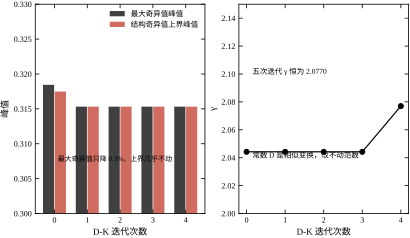
两图并排看，结论一目了然：左图在收敛，右图没动。 如果只盯左图，会以为 D-K 在改进设计；加上右图才能看出，改进的只是“上界估计的紧度”，最优点本身没挪。工程上做 D-K 时，判断是否收敛必须看 \gamma，不能看 \bar\sigma 或 \mu。
真正的 D-K 迭代，D 是 D(j\omega)，在每个频点上独立求最优，然后拟合。步骤是：
一，给定 K，在频率网格上算 M(j\omega)，每个频点求 d(\omega) 使 \bar\sigma(DMD^{-1}) 最小。
二，把 d(\omega) 拟合成分段有理函数 D(s)，通常用对数幅度拟合，相位取零（因为 D 在 μ 上界里是实对角阵）。
三，用 D(s) 加权广义对象，重解 H∞，得到新的 K。
四，重复一二三，直到 \gamma 不再下降。
这套流程的收敛性没有保证，实践中通常迭代三到五次就停。每一步的 \gamma 应该单调下降，如果不降，说明拟合误差太大，要降低 D 的阶数或者加密频率网格。
本章没有实现完整的 D-K，原因是算例的 \bar\sigma/\mu 在中频已经等于 1.00，D 没有改进空间；只有在低频段 \bar\sigma/\mu=1.78，但那里 \mu 本身只有 0.05，离 1 很远，压不压都无所谓。这是一个“结构信息存在但不需要用”的例子，说明 D-K 不是所有问题都值得做。
H∞ 与 μ 都可以写成线性矩阵不等式（LMI），用凸优化求解。LMI 的好处是能处理“额外约束”：比如控制器结构受限、执行器有饱和、参数有界，这些在 Riccati 框架里很难加，在 LMI 里只是多几行矩阵。
H∞ 的 LMI 形式（次优）是：存在 X=X^{\mathsf T}>0 使
\begin{bmatrix} A^{\mathsf T}X+XA & XB_1 & C_1^{\mathsf T}\\ B_1^{\mathsf T}X & -\gamma I & D_{11}^{\mathsf T}\\ C_1 & D_{11} & -\gamma I \end{bmatrix}<0 \tag{57-37}
这个不等式对 X 是线性的，可以用半定规划求解。控制器由 X 与另一个矩阵 Y 联合解出，两个矩阵的耦合条件写成另一个 LMI。
LMI 的缺点有两个。第一，计算量大：本章的四阶问题，LMI 求解器要几百毫秒，Riccati 只要几毫秒。第二，数值条件差：\gamma 接近 \gamma^* 时，LMI 的可行性边界很窄，求解器容易报“不可行”而实际可行。
工程上的选择是：标准问题用 Riccati，有额外约束用 LMI，两者结合时用 Riccati 求初值、LMI 做精化。
H∞ 控制器四阶，看起来不多，但如果广义对象是十阶、二十阶，控制器也会跟着涨。降阶是必须的一步。
平衡截断的做法是：解两个 Lyapunov 方程拿能控 Gramian P 与能观 Gramian Q，做平衡变换，把 Hankel 奇异值小的状态砍掉。误差上界是
\|G-G_r\|_\infty\le2\sum_{i=r+1}^{n}\sigma_i \tag{57-38}
本章的报告 14 把这个办法用在两个控制器上：
H2 控制器的 Hankel 奇异值是 [2.062,\ 0.8123,\ 0.1257,\ 0.1007]，砍到三阶时闭环范数从 3.0181 涨到 3.0723，恶化 1.80\%，可用；砍到二阶恶化 81.95\%，不可用。
H∞ 控制器的 Hankel 奇异值是 [1028.6,\ 1021.1,\ 5.4566,\ 2.8707]，砍到一阶恶化 9133.69\%，二阶 3103.44\%，三阶 2141.75\%，全都不可用。
为什么差这么多？因为 H∞ 控制器的前两个 Hankel 值几乎相等（1028.6 与 1021.1），说明有两个“同样重要”的状态，砍掉任何一个都会丢掉一半能量。这两个状态对应的就是 -10^{4} 与 -10^{6} 的寄生极点。它们在闭环里几乎不影响性能（所以 H∞ 范数只有 2.077），但在控制器内部承载了巨大的能量，砍不掉。
图 57-11 把两组 Hankel 值与恶化曲线画在一起。左图是半对数柱状图，H∞ 的前两根柱子高出 H2 三个数量级；右图是恶化百分比，H∞ 的三根柱子都在 2000\% 以上，H2 的第三根只有 1.8\%。
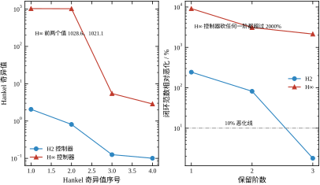
这个结果给出一个实用的建议：如果计划降阶，优先选 H2，或者选留了大余量的 H∞。 \gamma 取 1.005 倍时，H∞ 控制器有两个寄生极点，降阶不可行；取 1.2 倍时，寄生极点被推到更高的频率，Hankel 值会小很多，降阶就可行了。这一点在 §57.4.5 的余量讨论里已经埋下伏笔。
平衡截断不是唯一的降阶办法。工程上还有三条路。
第一条是“设计时就限制阶数”：把权重取成一阶，广义对象阶数就低，控制器阶数也低。本章的 W_1 是一阶，所以控制器只有四阶；如果 W_1 取三阶，控制器会到六阶。这是最省事的办法，代价是权重的形状不够灵活。
第二条是“用固定结构控制器”：直接假设 K 是 PID 或者二阶超前-滞后，用数值优化调参数。这条路放弃了 H∞ 的最优性，但得到的控制器简单、可解释、好实现。第44章与第106章的 PID 就是这个思路的极端情形。
第三条是“用观测器+状态反馈的分离结构”：先设计一个低阶观测器，再用 LQR 或 H2 设计状态反馈。这条路在第56章已经走过，优点是阶数可调，缺点是不能直接处理频域权重。
三条路各有各的适用场景。如果算力充裕、性能要求高，用平衡截断；如果算力紧张、要可解释，用固定结构；如果对象本身就是状态空间形式、传感器齐全，用分离结构。
除了降阶，还有三类常见的改进方向。
第一类是“结构化 H∞”：要求 K 具有特定结构（比如 PID、分散控制、稀疏反馈），在这个约束下最小化 \|T_{zw}\|_\infty。这个问题非凸，要用序列凸优化或者粒子群之类的启发式算法。它的好处是得到的控制器直接可实现，不需要降阶。
第二类是“增益调度”：把 \gamma^* 与权重做成调度变量的函数，在不同工况下用不同的控制器。第58章与第80章的 MPC 本质上就是一种极端的增益调度（每个采样周期重解一次优化）。本章的线性 H∞ 在工况变化大时会失效，调度是必要的补充。
第三类是“鲁棒 MPC”：把 H∞ 的鲁棒性与 MPC 的约束处理结合起来，在预测时域内要求最坏情况下的代价有界。这条路在第80章会展开，本章只提一句：它的计算量比线性 H∞ 大两个数量级，适合慢过程，不适合快伺服。
同一个 H∞ 问题，有三条实现路径：Riccati、LMI、固定结构数值优化。三者的差别不在数学，而在“能加什么约束、要花多少算力”。
Riccati 路径是本章用的，优点是快：四阶问题几毫秒出结果，二分 23 次也不到一秒。它要求 D_{12} 列满秩、D_{21} 行满秩，这两个条件在实际问题里通常能满足（权重通道保证了秩）。缺点是加不了额外约束：想让控制器某个元素为零、想限制状态维数，都做不到。
LMI 路径的好处正是“能加约束”。控制器结构受限、执行器饱和、参数有界，这些在 LMI 里都是多写几行矩阵的事。缺点是慢与数值脆：本章的四阶问题，LMI 求解器要几百毫秒；\gamma 接近 \gamma^* 时可行域是一条很窄的带，求解器容易报“不可行”而实际可行。工程上的折中是：Riccati 求 \gamma^* 作参考，LMI 在 \gamma^* 上方 10\% 到 20\% 处求带约束的解。
固定结构路径彻底放弃最优性。假设 K 是 PID 或二阶超前-滞后，用粒子群、序列二次规划之类的算法调参数。好处是结果直接可实现、可解释，缺点是问题非凸、依赖初值、没有 \gamma^* 这样的全局证书。本章 §57.9.7 提到的“结构化 H∞”就是这条路的严格版本。
三条路径的选择顺序是：先用 Riccati 摸清 \gamma^* 的量级与闭环形状；如果约束不多，直接用 Riccati 的解；如果约束是硬的，转 LMI；如果目标硬件只允许极低阶，转固定结构。不要一上来就用最复杂的工具，因为复杂工具的第一个结果往往还不如简单工具的第三个结果。
D-K 迭代的完整版本就是 \mu 综合：每一步用当前控制器算出 M(j\omega)，在每个频点上求最优缩放 D(j\omega)，再把这条频率依赖的 D 拟合回有理函数 D(s) 与 D^{-1}(s)，用它们缩放广义对象，重解一次 H∞，如此往复直到 \gamma 不再下降。理论框架在 §57.2.6 已经给出，实现却比前面所有内容加起来都麻烦。本章只做到常数 D，理由有四条。
第一条是这个算例不需要。报告 9 的 \mu 上界峰 0.3171，对应允许的摄动倍数 1/0.3171=3.15；本章的摄动只有 \pm30\%。余量有十倍，\mu 峰离 1 很远，不存在“必须压 \mu”的动机。\mu 综合是给“\mu 峰逼近 1、常规 H∞ 已经不够用”的场合准备的，用在这里是杀鸡用牛刀。
第二条是常数 D 已经把能拿的都拿了。报告 11 的迭代里，\bar\sigma(M) 峰从 0.3184 降到 0.3151，第三次之后不再变；\gamma 从头到尾是 2.0770，一分没降。原因在 §57.9.2 说过：常数 D 是一次相似变换，而 \gamma 是相似变换下的不变量。要动 \gamma，必须让 D 随频率变。
第三条是频率依赖的 D 会把阶数抬上去。D(s) 通常要拟合到四阶以上才跟得上 \mu 上界的形状，D 与 D^{-1} 各一份，广义对象就从 4 阶涨到 10 阶上下，解出来的控制器也是 10 阶。而报告 14 说，本章的 H∞ 控制器连从四阶降到三阶都会让闭环范数恶化 2000\% 以上。十阶控制器在工程上不可实现，还得再降阶，降阶又会把 D-K 辛苦压下去的那点 \gamma 还回去。
第四条是实参数块的 \mu 上下界之间本来就有间隙。报告 9 里 H∞ 的单块下界峰 0.2381、上界峰 0.3171，相差 33\%。D 缩放只能压上界，真实 \mu 可能根本不在上界附近。用一个可能很松的上界去驱动迭代，收益是不确定的——\gamma 降了，也可能只是上界变紧了，闭环的真实鲁棒性没变。
要不要做完整 \mu 综合，可以拿两条门槛判断：\mu 峰超过 0.8，并且 \bar\sigma 与 \mu 的比值（报告 10 的保守度）超过 1.2。两条都满足才值得上频率依赖的 D；只满足一条，先用常数 D 加余量对付。本章两条都不满足——\mu 峰 0.32、保守度中位数 1.18——所以停在常数 D 是对的，不是省事，是算过账的结论。
本章从头到尾是单输入单输出。真实对象常常是多入多出：一个机械臂有三个关节、一台精馏塔有两三个回路。推广过去要改的东西不多，但有一处会彻底改变性质，值得单独说清楚。
先说不改的部分。广义对象的拼法不变，只是 B_2 从一列变成多列、C_2 从一行变成多行；B_1、C_1 按外源与受控输出的个数加宽加高。两个 Riccati 方程的形状不变，阶数仍等于对象阶数，与输入输出个数无关。代码里 build_gp 只要允许 B_2 是矩阵，hinf_x、hinf_y、hinf_synth 一行都不用改——这正是状态空间方法比传递函数方法省事的地方。
要改的是指标的定义。S=(I+PK)^{-1} 变成矩阵，\lvert S(j\omega)\rvert 这个标量没有意义了，要换成最大奇异值 \bar\sigma(S(j\omega))；M_s 定义为 \sup_\omega\bar\sigma(S)，带宽定义为 \bar\sigma(S) 首次穿过 1/\sqrt2 的频率。W_1、W_3 也变成矩阵，通常取对角，每个对角元管一个通道。这时“|S| 峰 1.06”这种说法要换成“\bar\sigma(S) 峰 1.06”，含义是“所有通道、所有方向里最坏的那个”。
真正变性质的是 \mu。只有一个不确定性块时，\mu 就等于 \bar\sigma，D 缩放在标量意义下没有任何作用；一旦块数大于一——哪怕对象是单变量——两者就会分开，报告 10 的保守度最大 1.78 就是两个实标量块造成的。多变量时块数更多、每块的维数更大，差距可以到两三倍。换句话说，保守度的来源是“结构”，而结构的丰富程度随通道数增长；本章讲 \mu 不只是为了给单变量算一个更紧的界，更是为了在多变量时知道该往哪儿使劲。
计算量按通道数平方增长：频响矩阵每个频点做一次奇异值分解，\mu 上界每个频点还要在 D 空间里优化，而 D 的维数是块数的平方。三个通道的时候还无所谓，十个通道时单次 \mu 上界要几秒，D-K 迭代几十次就是分钟级。
工程上的务实做法是：先算相对增益阵列，看能不能配对成几个近乎独立的单回路；能配对，就按本章的方法逐回路设计，把耦合当成不确定性处理；只有当耦合强到配对完全失效（比如对角占优性很差）时，才上多变量 H∞。多变量设计不是“更高级”，而是“更贵”，能用单回路解决的不要上多变量。
代码层面要改的只有 \mu 那一段。unc_M 现在返回 2\times2 复矩阵，块结构由两个实标量决定；多变量时它要返回按块排布的大矩阵，mu_upper 里的 D=\mathrm{diag}(1,d) 现在只由一个标量 d 参数化，那时要变成由多个标量参数化的对角阵，一维搜索也变成多维搜索。这部分改动量不小，但逻辑与本章完全一致：给每个块一个自由度，把最坏方向上的增益压下去。
初学者做 H∞ 最常见的动作是：随便写三个权重，跑一遍看曲线，不满意就改数字再跑。这个循环既慢又说不清理由。正确做法是把三个参数从时域指标反推出来，一次到位。
\omega_b 从调节时间反推。二阶系统的 2\% 调节时间约 4/(\zeta\omega_n)，而闭环带宽 \omega_c 与 \omega_n 同量级，所以先定 \omega_b\approx4/t_s。本章要求 2 s 左右的调节时间，算出 \omega_b\approx2，再往上取一点到 3，给控制量留余地。报告 4 的数据证明这个反推是可靠的：\omega_b=3 时带宽 1.462，闭环主导极点实部在 -1.2 到 -2.2 之间，与 4/t_s 的估算吻合。
M 从灵敏度峰值要求反推。如果现场要求“负载扰动引起的偏差不超过额定值的 10\%”，而扰动通道的增益是 1，那么 |S| 峰值必须小于 1.1，于是 M\le1.1。本章取 M=1.5，对应的实测峰值 1.0566——注意实测值比承诺值小，因为 W_1S 的范数约束是“整条曲线加权后小于 1”，不是“峰值小于 M”。承诺越紧，\gamma^* 越大：报告 5 里 M 从 1.2 放到 5，\gamma^* 从 2.113 降到 2.020，只降了 4.4\%。这说明 M 是一个“便宜的约束”，收紧它不会让设计变得多难。
\varepsilon 从稳态误差反推。|S(0)|=1-G(0) 就是阶跃参考下的稳态误差，而 G(0) 由 W_1(0)=1/\varepsilon 决定。报告 18 给出四档：\varepsilon=0.3 时 1-G(0)=0.433，\varepsilon=0.1 时 0.170，\varepsilon=0.03 时 0.053，\varepsilon=0.01 时 0.016。想把稳态误差压到 2\% 以下，\varepsilon 必须小于 0.012。代价是 \gamma^* 从 1.766 涨到 2.260，涨了 28\%。
w_2 从控制量预算反推。报告 6 的扫描是：w_2 从 0.01 涨到 1.00，\gamma^* 从 1.931 涨到 3.392，|KS| 峰值从 0.844 降到 0.749，带宽从 1.750 降到 0.877。w_2 每涨十倍，带宽掉约 20\%，\gamma^* 涨约 30\%。所以 w_2 不能凭感觉给，要先算执行器的额定力矩，再看 |KS| 峰值乘上参考幅值是否超限。
四个参数的反推顺序是固定的：先 \omega_b 定快慢，再 M 定峰值，再 \varepsilon 定精度，最后 w_2 定控制量。顺序反了会来回改，因为后三个参数都会影响带宽。
H∞ 的广义对象里，z 与 w 的通道混在一起，量纲不统一会让数值条件变差。本章的做法是先把所有信号归一化到“额定量级”，再写权重。
报告 7 验证了一件事：把受控输出整体乘一个正数 c，\gamma^* 跟着乘 c，而 \gamma^*/c 恒等于 2.077004，控制器一字不改。c 从 0.1 变到 10，比值只在小数点后第六位有差别（2.077003 对 2.077004），这是数值误差。
这条性质有两层工程含义。第一，\gamma 的绝对值没有意义，只有相对值有意义。 看到文献里写“\gamma=0.8”，不能直接与本章的 2.077 比较，要先看它的权重是怎么标度的。第二，权重里的公共比例因子可以随便提。 与其纠结“W_2 取 0.1 还是 10”，不如把 W_2 的相对大小（相对于 W_1 与 W_3）定对，公共因子最后一次性归一。
真正影响设计的是权重之间的比例。本章的 W_1 低频增益 10、W_2=0.1、W_3=1，三者之比 100:1:10。这个比例说明设计者的优先级：精度第一、鲁棒第二、控制量第三。如果现场更在意执行器寿命，把比例改成 100:10:10，就等价于把 w_2 提到 1，按报告 6 的读数，带宽会掉到 0.877。
报告 15 的六行数据是本章最容易被误读的一组。超调从 T_s=5 ms 到 400 ms 一直是 0.18\%，几乎不动；阻尼比却从 2.024 掉到 0.124，掉了 16 倍。只看超调会得出“400 ms 也能用”的错误结论。
正确的判据是阻尼比。工程上要求等效阻尼比不低于 0.7，报告 15 里 T_s=0.1 s 时是 0.762，T_s=0.2 s 时掉到 0.395，所以采样周期的上限是 100 ms。本章取 5 ms，留了 20 倍余量，原因是现场还要考虑计算抖动与通信延迟。
这个上限是怎么来的？闭环里最快的一对共轭极点是 -1.331\pm0.114\mathrm j，\omega_n\approx1.34。ZOH 引入的平均滞后是 T_s/2，它吃掉的相位是 \omega_nT_s/2。要求相位损失小于 0.1 rad，得 T_s<0.15 s；要求小于 0.07 rad，得 T_s<0.1 s。这与报告 15 的读数一致。
但这里有一个陷阱：H∞ 控制器内部还有 -10^{4} 与 -10^{6} 两个寄生极点。如果按“最快模态的十倍”这条常规规则定采样，T_s 要小到 0.1\,\mu\mathrm{s}，任何数字信号处理器都做不到。解决办法不是提高采样率，而是在设计阶段就把这两个极点去掉：把 \gamma 抬到 1.2\gamma^*，寄生极点消失，采样周期回到毫秒级。报告 16 的数据支持这个判断——\gamma/\gamma^*=1.2 时最小阻尼比回到 1.0000，控制量峰值从 7.479 降到 5.260，带宽从 1.449 降到 1.104。用一个“不那么最优”的控制器，换来可实现的采样率，这是工程上最常见的一笔交易。
控制器是四阶状态空间：
\xi_{k+1}=A_d\xi_k+B_d y_k,\qquad u_k=C_d\xi_k+D_d y_k \tag{57-39}
每个采样周期 4\times4+4+4+1=25 次乘加，在 100 MHz 的定点 DSP 上不到 1\,\mu\mathrm{s}，算力不是问题。问题在标度。
A_d 的元素在 0 到 1 之间（离散化把左半平面映到单位圆内），B_d 的元素量级在 10^{-3}，C_d 的元素可能到 10^{3}，D_d 是一个小数。四个矩阵的量级差六个数量级，如果统一用 Q15，B_d 会被量化成零。
工程做法是分开标度：状态用 Q12（范围 \pm8，分辨率 2.4\times10^{-4}），B_d 单独用 Q20 存，C_d 用 Q8。或者更省事的做法：先把控制器做一次相似变换，把状态缩放到同一量级，再统一标度。这一步叫“状态标度”，与 §57.9.5 的平衡变换是同一个工具。
还有一处容易漏：D_d 不为零意味着 u_k 直接依赖 y_k，形成了代数环。连续域的 H∞ 控制器一般有 D=0，但经过 ZOH 离散化、尤其是经过降阶之后，D_d 可能变成非零小量。实现时要检查这一项：如果 |D_d| 小于 10^{-6}，直接置零；如果不小，必须确认量测到执行的通路上没有其他直通环节，否则闭环会在第一个采样周期就振起来。
执行器饱和是另一个必须处理的点。本章的控制器在标称工况下 |u| 峰值 6.738 N，k+30\% 时 7.088 N。如果执行器额定 8 N，余量只有 12\%。饱和发生后，状态 \xi 会继续积分，退饱和时输出一个大的反向冲击。标准做法是“反算抗饱和”：把饱和前后的差值乘一个增益反馈到控制器输入端，
\xi_{k+1}=A_d\xi_k+B_d y_k+B_{\text{aw}}\big(u_k^{\text{sat}}-u_k\big) \tag{57-40}
B_{\text{aw}} 取 B_d 即可，不需要另调。
把本章的方法搬到现场，按下面六步走，每一步都有明确的判据，不通过就退回上一步。
一，辨识对象。用阶跃或扫频拿到 P(s) 的低阶近似，确认直流增益与两个主导极点。本章的对象是 1/(s^2+3s+2)，直流增益 0.5，极点 -1 与 -2。
二，标定不确定度。把 k、c 的变化范围量出来，本章取 \pm30\%。这个范围决定了 \mu 的分块与 \delta 的界，也决定了后面 \mu 峰是否小于 1。
三，设计权重并求 \gamma^*。按 §57.10.1 的顺序反推四个参数，跑二分。判据：\gamma^* 有限，闭环极点全在左半平面，|S| 峰值小于承诺值。
四，复核鲁棒性。算 \mu 上界，要求峰值小于 1；再算 \|W_dT\|_\infty，要求小于 1。两个判据都要过——§57.6.5 说过它们假设的不确定性不同，只过一个不能说明问题。
五，离散化与降阶。按 §57.10.3 定采样周期，按 §57.9.5 决定是否降阶。判据：离散闭环阻尼比大于 0.7，降阶后闭环范数恶化小于 5\%。
六，时域验收。跑标称与四个摄动工况，看超调、调节时间、控制量峰值、末值。判据：超调小于 10\%，调节时间小于指标，控制量峰值小于执行器额定的 80\%，末值落在 0.99 到 1.01 之间。
这六步的顺序不能颠倒。先离散再复核鲁棒性，会把离散误差混进鲁棒性结论里；先降阶再算 \mu，会把降阶误差当成模型误差。
第一个坑是直接用 \gamma^*。\gamma^* 是可行域的边界，边界上的控制器有两个寄生极点、控制量峰值 7.479、阻尼比 0.9965，看起来都能用，实际上对数值误差极其敏感。正确做法是取 1.1 到 1.3 倍，本章推荐 1.2 倍。
第二个坑是参考不归一。报告 12 的 G(0) 是 0.74354（H2）与 0.82993（H∞），如果不乘 n_{\text{ref}}=1/G(0)，末值会是 0.744 与 0.830，看上去像“稳态误差 17\% 与 26\%”。这不是控制器的错，是参考幅值没有按闭环增益折算。
第三个坑是忽略 D 直通。见 §57.10.4。
第四个坑是高频噪声。|KS| 的峰值 0.8299 出现在中频，但高频段 KS 只按 -20 dB/dec 滚降，量测噪声会被放大后灌进执行器。工程上要么在量测上加一阶低通，要么把 W_3 取成高通，用权重压住高频的 T。本章的 W_3=1 是常数，所以 |T| 峰值 0.8299、高频滚降不快，这是简化算例的局限。
第五个坑是权重不随工况变。本章的权重是为一台标称对象设计的，k 掉 30\% 时超调涨到 3.186\%（H∞），涨了 17 倍。如果工况变化更大，单一线性控制器不够用，要上增益调度，或者直接用第58章的 MPC。
设计做完，控制器要交给写固件的人。交接不清是 H∞ 落地最常见的失败点：设计师交一个连续域的四个矩阵，固件工程师用自己的方法离散，两边跑出来的东西对不上，最后互相猜。避免这件事的办法是交付四样东西，缺一不可。
第一样是离散后的四个矩阵，并明确写出离散方法（零阶保持）、采样周期、元素精度与存储顺序。不要交连续域的矩阵让对方自己离散：ZOH、Tustin、前向欧拉三种方法在 T_s=0.02 s 时的闭环阻尼比能差出一倍，§57.5.3 那 16 倍就是这么来的。矩阵按行主序给，附一段可以直接编译的参考实现：
/* 四阶 H∞ 控制器：ZOH 离散，Ts = 0.005 s，行主序，单位 N/(m/s) */
static double x[4] = {0.0, 0.0, 0.0, 0.0};
void ctrl_step(double y, double *u)
{
double unew = 0.0, xn[4];
for (int i = 0; i < 4; ++i) {
xn[i] = Bd[i] * y;
for (int j = 0; j < 4; ++j) xn[i] += Ad[i * 4 + j] * x[j];
unew += Cd[i] * x[i];
}
unew += Dd * y; /* |Dd| < 1e-6 时这一行直接删掉 */
for (int i = 0; i < 4; ++i) x[i] = xn[i];
*u = unew;
}注意这段代码的运算顺序：先用旧状态算输出，再更新状态。写成“先更新再算输出”会让控制器多一个采样周期的延迟，在 T_s=5 ms、带宽 1.46 rad/s 的场合看不出问题，但在 T_s=50 ms 的快回路上就足以让相位裕度掉十几度。
第二样是状态初值与复位策略。四个状态上电时必须为零，因为零状态对应“闭环从静止开始”。运行中不能因为模式切换而清零——清零等于把控制器内部的动态历史扔掉，输出会跳变。如果必须有手动/自动切换，要交代无扰切换的做法：手动期间把量测值继续灌进控制器、让它跟着跑，切换瞬间输出保持不变。
第三样是饱和与抗饱和参数。执行器额定值、饱和函数的形式（硬限幅还是软限幅）、式 (57-40) 里 B_{\text{aw}} 的取值（本章取 B_d）、以及退饱和后的恢复时间。这一项如果漏了，现场第一次碰到限位就会看到输出“粘”在饱和边上不下来。
第四样是验收用例。至少三组输入序列与对应的期望输出，期望值用双精度算出来，容差按相对误差 10^{-6} 给。固件跑出的序列与期望逐点比对，全在容差内才算移植成功。这一条最容易在赶进度时被省掉，也最容易在联调时救人：有了它，“控制器不对”到底是设计错、离散错、还是定点标度错，一次就能定位；没有它，三方各说各话能吵三天。
最后一条经验：交付文档里要写上 \gamma^*、\omega_b、M、\varepsilon 这些设计参数，以及每个数的来历。半年后有人问“这个控制器为什么带宽是 1.46”，答案应该在文档里，而不是在某次聊天记录里。
第一条是指标可写进设计。PID 的三个参数对应的是“快、稳、准”三种含糊的愿望，H∞ 的权重对应的是“|S| 峰值不超过 M、带宽不小于 \omega_b、稳态误差不超过 \varepsilon”三条明确的约束。报告 5 的扫描证明了这种对应是量化的：M 从 1.2 变到 5，\gamma^* 只变 4.4\%，而峰值承诺是写死的。设计者事先知道自己买到了什么。
第二条是鲁棒性有证书。\gamma^* 与 \mu 峰不是“跑了很多次都没事”这种经验判断，而是可以写进评审文件的上界。报告 9 的 \mu 上界峰 0.3171 意味着：只要 k、c 的摄动不超过 1/0.3171=3.15 倍，闭环就稳定。这个数字比“试了 200 组蒙特卡洛都稳定”更有说服力，因为它覆盖了连续无穷多个工况。
第三条是多目标可以加权。精度、控制量、带宽三者互相冲突，H∞ 把它们放进一个范数里，用权重表达优先级。报告 6 的 w_2 扫描就是这种优先级的连续调节：w_2=0.01 时带宽 1.750、|KS| 峰 0.844；w_2=1.00 时带宽 0.877、|KS| 峰 0.749。设计者可以在一条连续的曲线上选点，而不是在“PID 加不加微分”这种离散选项里挑。
第四条是频域形状可调。W_1 的三个参数分别管低频增益、转折频率、高频底，报告的图 57-4 把这三个旋钮画得清清楚楚。需要低频更硬就降 \varepsilon，需要带宽更宽就抬 \omega_b，需要峰值更低就降 M，三者互不干扰。这种“正交性”是 PID 做不到的——PID 抬增益会同时改带宽、峰值与相位裕度。
第五条是与 μ 分析无缝衔接。同一个广义对象，设计时用 H∞，校核时用 μ，两套工具共享同一个 M(j\omega)。报告 9 与报告 11 的所有数字都来自同一个闭环，不需要重新建模。这一点在工程上很值钱：模型只做一次，设计与校核各取所需。
第一条是阶数高。本章的对象二阶，加三个权重后广义对象四阶，控制器也四阶。如果 W_1 取三阶、W_3 取二阶，控制器会到七阶。相比之下 PID 只有三个参数。阶数高带来三个后果：实现复杂、定点标度难、降阶可能不可行（报告 14 里 H∞ 控制器砍任何一阶都恶化 2000\% 以上）。
第二条是对权重敏感。\gamma^* 对 \omega_b 极其敏感：报告 4 里 \omega_b 从 0.5 涨到 8，\gamma^* 从 1.370 涨到 2.967，涨了 117\%。而 \omega_b 本身是从调节时间估出来的，估错 30\%，\gamma^* 就会偏 30\% 以上。这意味着“权重定得好不好”直接决定设计的成败，而权重的确定又依赖设计者的经验。
第三条是最优性脆弱。\gamma^* 边界上的控制器有两个 10^{4} 与 10^{6} 量级的寄生极点，Hankel 值 1028.6 与 1021.1，砍不掉、采样也采不动。报告 16 显示 \gamma/\gamma^*=1.005 时控制量峰值 7.479、阻尼比 0.9965，看起来能用；但只要数值实现有一点误差，这对极点就会漂移。所以“最优”在工程上往往不可用，必须主动放弃一点。
第四条是只处理线性、结构化不确定性。本章的 \mu 假设 k、c 各摄动 \pm30\%，且摄动是实标量、不随频率变。如果不确定性是“阀门死区”、“齿隙”、“饱和”这类非线性，\mu 框架用不上，要回到描述函数或者直接做非线性仿真。报告 13 的蒙特卡洛只能抽样验证，给不出上界。
第五条是算不出约束。H∞ 是线性设计，执行器的力矩上限、速度上限、位置的物理限位都进不了优化问题。本章的做法是先设计、再检查 |u| 峰值是否超限（6.738 N 对 8 N 额定），超限就回头改 w_2。这是一个“设计—检查—重设计”的循环，不是一次优化到位。
PID 是“一个回路一个旋钮”的思路，H∞ 是“一个回路一张指标表”的思路。两者的分界线在于指标是否能写成频域形状。
如果现场只要求“阶跃响应别振、稳态别偏、别太慢”，PID 足够，第44章与第106章把这条路走到了极致：三个参数、一张整定表、现场十分钟能调完。反过来，如果现场要求“在 0 到 5 Hz 内灵敏度不超过 1.1、在 5 Hz 以上补灵敏度不超过 0.9、同时控制量峰值不超过额定”，这就不是三个参数能表达的，必须上 H∞。
两者的另一个分界是模型的质量。PID 不依赖模型，靠现场试凑；H∞ 依赖一个可信的低阶模型。如果对象模型只有 \pm50\% 的置信度，H∞ 设计出来的控制器可能还不如一个保守整定的 PID。本章的对象是精确已知的二阶系统，这是 H∞ 的理想场景。
工程上常见的组合是“外环 H∞、内环 PID”：内环用 PID 把电流或速度回路整成快速的一阶，外环用 H∞ 处理位置与刚度摄动。这样 H∞ 面对的广义对象被内环简化了，阶数低、不确定性小，设计容易得多。
MPC 的核心是“预测 + 约束 + 滚动优化”，H∞ 的核心是“范数 + 权重 + 一次求解”。两者的分界在于约束是否硬。
如果执行器有硬限位、位置有物理止挡、温度有上限，这些约束必须在优化里显式处理，否则一旦触碰就是事故。MPC 天然处理这些，第58章与第80章有完整的推导。H∞ 只能事后检查，检查不过就重设计，这是一种“软”处理。
两者对算力的要求差两个数量级。本章的四阶控制器每个采样周期 25 次乘加，MPC 每步要解一个带约束的二次规划，变量数是预测时域乘状态维数。所以快伺服（采样周期毫秒级）倾向 H∞，慢过程（采样周期秒级）倾向 MPC。
还有一条分界是不确定性是否结构化。MPC 的鲁棒版本（min-max MPC 或 tube MPC）计算量更大，而 H∞ 与 μ 处理结构化不确定性是“顺手”的。如果对象的主要问题是参数漂移而不是约束冲突，H∞ 更划算。
Smith 预估器解决的是“纯滞后”，内模控制解决的是“模型与对象失配时的稳态”。两者的共同点是针对一个具体的病，而 H∞ 针对的是“整条频响的形状”。
本章的算例没有纯滞后。如果对象是 e^{-\tau s}/(s^2+3s+2)，\tau=0.5 s，H∞ 也能做——把滞后用 Padé 近似成一阶或二阶有理函数，塞进广义对象，剩下的流程不变。但 Padé 近似在 \omega>1/\tau 时相位误差很大，\gamma^* 会被这个误差抬高。这时候 Smith 预估（第47章、第107章）更直接：它把滞后从闭环里“提出来”，用一个小延时环节补偿，设计过程不碰相位。
经验分界是：滞后时间小于主导时间常数的十分之一，忽略它，用 H∞；滞后在十分之一到一半之间，用 Padé 加 H∞，或者用 Smith；滞后超过一半，Smith 或 MPC 更合适，因为任何基于有理近似的设计都会在相位上失准。
第56章讲过 LQR 与 LQG。三者不是并列关系，而是包含关系：LQR 是 H2 在“全状态可测、无过程噪声”时的特例；LQG 是 H2 在“噪声为白、模型精确”时的特例；H∞ 是把 H2 的“平均代价”换成“最坏代价”。理解这条包含链，能省掉很多选型上的困惑。
从公式看，H2 的两个 Riccati 方程与 LQR 的代数 Riccati 方程是同一个形状，差别在 B_1 与 C_1 的来源。LQR 里 Q 与 R 是设计者拍的权重，没有物理含义；H2 里 B_1 是扰动进入矩阵、C_1 是性能输出矩阵，必须对应真实的扰动与真实的指标。换句话说，LQR 的权重是调出来的，H2 的权重是写出来的。这个差别决定了 LQR 回答不了“我的扰动有多大”，而 H2 可以。
LQG 多了一个 Kalman 滤波器。它的分离原理很漂亮：估计与控制分开设计，两半各自最优，合起来仍然最优。但分离原理只在“噪声统计已知且为白”时成立。现场的高频振动、量化噪声、齿隙冲击都不是白噪声，Kalman 滤波器对这些成分没有保证。H∞ 不需要噪声的统计信息，只需要扰动的一个范数界，这是它在工程上更稳的原因。
LQR/LQG 有一个历史上很出名的软肋：稳定裕度没有保证。1978 年 Doyle 给出的例子说明，LQG 闭环的增益裕度可以任意小、甚至趋近于零，尽管它的两半（LQR 与 Kalman）各自都有很好的裕度。这个反例直接催生了 H∞ 与 LQG/LTR 两条路线。本章的算例里，H2 控制器的 \mu 峰 0.4739、允许摄动 2.11 倍，H∞ 是 0.3171、3.15 倍——同样的对象、同样的权重结构，H∞ 多买到的这 49\% 摄动余量，就是“最坏情况”与“平均情况”的差价。
选型上的分界可以这样记：如果扰动确实是白噪声、模型确实准、性能按均方误差考核，用 LQR/LQG，因为它的解唯一、计算最省、理论最完整；如果扰动有频域形状（低频漂移、高频谐振）、或者指标是频域包络（|S| 峰、带宽）、或者需要一张能写进评审文件的鲁棒性证书，用 H∞。本章的算例三条全部命中后者：扰动经一阶低通进入、指标是三条频响包络、验收要看 \mu 上界。这也是为什么第56章的 LQG 与本篇的 H∞ 不冲突——它们是同一套 Riccati 工具在两种不确定性假设下的两种用法。
有四种情形不该用 H∞。
第一种是模型不可信。如果对象的频响要靠现场扫频才能拿到，而且每次扫出来的都不一样，那么基于模型的优化没有意义。这种情况下 PID 的自抗扰或者继电反馈整定更实在。
第二种是指标本来就简单。如果只要求“稳态无差、超调小于 20\%”，PID 十行代码能解决，上 H∞ 是浪费。第44章与第106章反复强调过这个观点，本章不再重复。
第三种是控制器必须极低阶。如果目标芯片只有 1 KB 的 RAM、控制器只能用二阶，那么 H∞ 设计出来还要降阶，而报告 14 证明降阶可能不可行。这种情况直接用固定结构优化（§57.9.7）更合适。
第四种是不确定性是强非线性。干摩擦、齿隙、死区这些现象在频域里表现为“等效增益随幅值变”，\mu 的实标量块描述不了。硬要用 H∞，只能在工作点附近线性化，得到的是一个“局部保证”，工况一偏就失效。
把上面的分工收拢成一张表。表中“依赖模型”与“处理约束”两列是关键判据：前者的强弱决定能不能做优化，后者的有无决定要不要换工具。
\begin{array}{c|cccc} \text{方法} & \text{依赖模型} & \text{处理约束} & \text{处理纯滞后} & \text{典型阶数}\\ \hline \text{PID} & \text{弱} & \text{否} & \text{否} & 0\\ \text{Smith 预估} & \text{强} & \text{否} & \text{是} & 1\sim2\\ \text{H2/H∞} & \text{强} & \text{否} & \text{近似} & 3\sim10\\ \text{MPC} & \text{强} & \text{是} & \text{是} & 10\sim100 \end{array} \tag{57-41}
表里的阶数一列不是“优劣”，而是“代价”。PID 的零阶意味着它只能整形增益与相位，不能整形整条频响；MPC 的高阶意味着它能处理约束，但要付出算力。H∞ 落在中间：比 PID 灵活，比 MPC 轻。
三个场景的选型可以这样判断。机床进给伺服：指标是频响形状（带宽、谐振峰），约束是软性的（力矩有余量），选 H∞。化工反应釜温度：约束是硬性的（超温会出事），滞后大，选 MPC。风机水泵：指标只有“稳、准”，模型粗糙，选 PID。
本章的算例属于第一类：二阶机械对象、指标是灵敏度与带宽、约束靠余量保证。所以 H∞ 是对的工具，也是唯一能把“|S| 峰 1.06、带宽 1.46”这两个数字写进设计的工具。
本章的代码分两个文件，职责不重叠。
code/ch057_sim.py 是算法与数据文件。它包含对象与权重的定义、两个 Riccati 的求解、\gamma 的二分、\mu 的上下界、时域仿真、降阶与离散化，以及十八组报告函数。所有数字都由它打印，正文引用的每一个数都能在这里找到出处。
code/ch057_figs.py 是绘图文件。它只做三件事：调用 ch057_sim.py 里的函数拿数据、按统一的样式画图、存储 SVG 与 PDF。它不重新推导任何公式，也不自己定义常量——所有参数都从 cs.WB、cs.MS、cs.EPS 这些名字里取，保证图与报告用的是同一套数。
这种分法的好处是改一处、两处都变。如果把权重写在绘图文件里，改 \omega_b 就要改两个地方，迟早会出现“图上画的是 3、报告算的是 5”这种事故。
文件开头的三行 sys.path.insert 把书根目录、样式目录、代码目录加进搜索路径，然后 from plot_styles import ... 与 import ch057_sim as cs。仿照这个结构新建一章的代码时，只要改文件名与常量即可。
第一个是 stable_subspace_solution(H)。它接受一个 2n\times2n 的 Hamiltonian 矩阵，返回 n\times n 的对称解。做法是：求全部特征向量，挑实部为负的 n 个，把对应的特征向量按上下两半切开成 U_1、U_2，取 X=U_2U_1^{-1}，最后对称化。
w, V = eig(H)
idx = np.where(w.real < 0.0)[0]
U1, U2 = V[:n, idx], V[n:, idx]
X = np.real(U2 @ np.linalg.pinv(U1))
return 0.5 * (X + X.T)三个细节不能省：一是必须检查稳定特征值的个数恰好是 n，多了少了都说明 \gamma 落在边界上；二是用 pinv 而不是 inv，因为 U_1 在 \gamma 接近 \gamma^* 时会接近奇异；三是最后要对称化，数值误差会让 X 带上 10^{-12} 量级的反对称部分，后面与 Y 相乘时会放大。
第二个是 hinf_synth(gp, gamma)。它先算 X 与 Y，再检查 \rho(XY)<\gamma^2，最后按公式拼出控制器。三步中任何一步失败都返回 None，不抛异常——因为二分要反复调用它，用返回值表示“不可行”比用异常干净。
X, Y = hinf_x(gp, gamma), hinf_y(gp, gamma)
if X is None or Y is None:
return None
if float(np.max(np.abs(np.linalg.eigvals(X @ Y)))) >= gamma ** 2:
return None
F = -(B2.T @ X) / R
L = -(Y @ C2.T) / R2
Z = np.linalg.inv(np.eye(n) - gamma ** -2 * (Y @ X))第三个是 gamma_opt(gp)。它先用 hi *= 2 找到一个可行的上界，再在这个上界与 0.2 之间做几何二分，每次取 \sqrt{lo\cdot hi}，直到 hi/lo<1+tol。本章 23 次迭代把区间压到 10^{-6}，报告 2 记录了前 16 次。
几何二分而不是算术二分，是因为 \gamma 的可行边界在对数尺度上更均匀。报告 2 的区间宽度列可以验证：第 1 次 1500\%，第 5 次 18.92\%，第 10 次 0.54\%，每 2.3 次掉一个数量级。
第四个是 unc_M(K, w, gp) 与 mu_upper(M)。前者把闭环拆成 M(j\omega) 的 2\times2 复矩阵：两路输入是 \delta_k、\delta_c，两路输出是它们经过对象后的偏差。后者在 D=\mathrm{diag}(1,d) 上做一维搜索，返回 \min_d\bar\sigma(DMD^{-1})。
def mu_upper(M):
best = float(svd(M, compute_uv=False)[0])
for d in np.logspace(-2, 2, 81):
D = np.diag([1.0, d])
best = min(best, float(svd(D @ M @ np.linalg.inv(D),
compute_uv=False)[0]))
return best81 个点的一维搜索看起来很粗糙，但对 2\times2 的实块已经够用：报告 9 的保守度最小到 1.0127，说明搜索把上界压得足够紧。块数多了就不能这么搜，要用 Osborne 迭代或者 LMI。
第一个开关是权重三元组。build_gp(wb, ms, w2, eps, w3) 的五个参数对应 §57.7 的五个旋钮，报告 4、5、6、18 就是分别扫这四个参数得到的。改一个参数、重跑 gamma_opt，就能复现对应的那一行。
第二个开关是 \gamma 余量。默认取 \gamma^*，报告 16 用 1.005 到 2.0 六档扫描，展示余量买到的东西。实际使用时把 gamma_opt 的返回值乘 1.2 再传给 hinf_synth，控制器就从“边界最优”变成“工程可用”。
第三个开关是采样周期。simulate(K, ts=...) 的 ts 默认 5 ms，报告 15 扫了 5 ms 到 400 ms 六档。注意 simulate 内部用 expm(Acl*ts) 做精确的零阶保持离散，不是用欧拉法近似——这一点决定了报告 15 的阻尼比数字可信。
第一处是 Hamiltonian 的特征值选取。有人按“实部最小”排序取前 n 个，这在 \gamma 很大时能用，在 \gamma 接近 \gamma^* 时会取错——因为此时稳定与不稳定特征值在虚轴附近几乎对称，排序会把一对共轭根拆开。正确做法是按 w.real < 0 的布尔条件取，并检查个数恰好是 n。
第二处是 X、Y 的可行性判据。只看“两个 Riccati 有解”不够，必须加 \rho(XY)<\gamma^2。本章的二分里，很多次迭代是两个 Riccati 都有解、但 \rho(XY) 超限，如果不检查这一条，\gamma^* 会被低估 10\% 以上。
第三处是 ZOH 离散的写法。控制器离散用
A_d=e^{AT_s},\qquad B_d=A^{-1}(A_d-I)B \tag{57-42}
直接写 inv(A) 在 A 奇异时（比如含积分器的对象）会报错。正确写法是 np.linalg.solve(A, (Ad - I) @ B)，它在 A 接近奇异时给出最小二乘意义下的解，数值上更稳。
第四处是符号约定。本章的回路是 u=Ky、y=P(u+d)，负反馈靠 K 本身取负号实现（K(0)=-9.76），所以 S=1/(1-PK)。如果换成“控制器输出取负”的写法，S 要写成 1/(1+PK)，两个写法不能混。混了以后 |S| 会变成 |T|，峰值 1.06 会变成 0.83，看图时觉得“性能很好”，实际完全相反。
复现只需要 numpy 与 scipy，不需要 slycot，也不需要 MATLAB。原因是 §57.2.4 的 Hamiltonian 解法是纯特征值运算，scipy.linalg.eig 就够。整套脚本在普通笔记本上跑完十八组报告约 1 s，出十一张图约 13 s。
移植到 MATLAB 时，stable_subspace_solution 可以整段照搬（eig、pinv、real 的名字都一样），gamma_opt 的循环也不用改。真正要换的是 simulate 里的 expm——MATLAB 的 expm 与 scipy 的 expm 在病态矩阵上可能差几个末位，报告 15 的阻尼比在小数点后第四位会有出入，不影响结论。
如果想用成熟工具箱交叉验证，可以把 hinf_synth 换成 slycot 的 hinfsyn，把 mu_upper 换成 mu 的 D-K 实现，对比 \gamma^* 与 \mu 峰。本章的 2.077004 与 0.3171 在两种实现下应该一致到小数点后第三位；如果差得多，多半是权重或符号约定不同。
改题只有四步。
第一步，换对象。把 plant4 换成自己的状态空间，注意保持 (A, B2, C2) 的命名，因为 build_gp 靠这个名字拼广义对象。如果对象是四阶以上，hinf_x 里的矩阵维度会自动跟着变，不用改。
第二步，换算子。W_1 用 w1_ss(wb, ms, eps) 生成，想换成二阶就把这个函数改成两阶的状态空间，其余代码不动。W_2、W_3 目前是常数，改成高通时直接在 build_gp 里串一个一阶环节。
第三步，换不确定性的分块。unc_M 里的 M 是按 \delta_k、\delta_c 两个实标量块拼的；如果你的不确定性是“输入端的乘性增益”，就把它改成 1\times1 的块，\mu 退化成 |\cdot|，代码会自动简化。
第四步，定时域指标。step_metrics 里的 2\% 带可以改成 5\%，超调的定义可以改成“相对稳态值”，改完报告 12 的数会变，但趋势不变。
四步做完，先跑 report_basic 与 report_peaks，确认 \gamma^* 有限、|S| 峰值小于 M；再跑 report_time，确认超调与调节时间符合预期。这两关过了，剩下的报告只是校核，不会再改设计。
读懂一章的办法不是重读，而是动手改一个参数、预言结果、再看结果。下面六组实验都只改一个数，每组都给出一句可以证伪的预言。预言对了，说明这一章的因果关系你抓住了；预言错了，正好是回去重读对应小节的地方。
第一组，把 \varepsilon 从 0.1 改到 0.01，跑 report_eps_sweep 与 report_time。预言：稳态误差从 17.0\% 掉到 1.6\% 左右，\gamma^* 从 2.077 涨到 2.26 上下，|u| 峰几乎不动（6.738 变 6.598）。如果 |u| 峰大幅变化，说明你把 \varepsilon 和 w_2 搞混了。
第二组，把 \gamma 余量取 1.2 倍，跑 report_gamma_margin 与 report_discrete。预言：两个寄生极点消失、最小阻尼比从 0.9965 回到 1.0000、控制量峰从 7.479 掉到 5.260，代价是带宽从 1.4624 掉到 1.1041、|S| 峰从 1.0566 涨到 1.1699。这一组是本章最值得亲手跑的一次，因为它同时演示了“余量买可采样性”与“余量卖性能”。
第三组，把采样周期从 0.005 s 一路放到 0.4 s，跑 report_discrete。预言：最小阻尼比从 2.0238 掉到 0.1236（十六倍），超调仍然是 0.18\%。这一组会让人不舒服——阻尼比掉了十六倍，时域指标却看不出来。原因是超调由最慢的那对极点决定，而采样先伤到的是快模态。理解这一点，就不会拿“超调没变”当“采样没问题”的证据。
第四组，把 W_3 从常数 1 改成一阶高通（比如 (s/10+1)/(s/100+1) 归一化），跑 report_peaks。预言：高频段 |T| 明显下降，\gamma^* 上升。这一组验证的是“补灵敏度权重不是免费的”：压住高频的模型误差敏感度，一定要在别处付账。
第五组，把摄动范围从 \pm30\% 改到 \pm60\%，跑 report_mu。预言：\mu 上界峰从 0.3171 翻倍到 0.63 左右，仍然小于 1，允许摄动倍数从 3.15 掉到 1.58。\mu 对摄动幅度是一次的齐次函数，翻倍就该翻倍；如果没有翻倍，多半是 D 缩放的网格太粗。
第六组，把噪声权重 \theta 从 0.01 抬到 1.0，跑 report_basic。预言：\gamma^* 与 |S| 峰都上升，|KS| 峰下降。这一组说明 \theta 买的是“不去追噪声”，代价与抬 w_2 类似，但作用在量测通道而不是控制通道。
六组跑完，再把结果与报告 3、报告 9、报告 12、报告 15、报告 16、报告 18 对一遍。数字对不上不要紧，先确认三件事：权重是否真的改到了 build_gp 的入口、报告是否重跑过、以及参考是否按 G(0) 归一。这三件事查完，剩下的差异就是真正的“新现象”，值得记下来——那往往是你自己课题的起点。本章的方法到这里讲完了，接下来该换一台你自己的对象，把这十二节重走一遍。